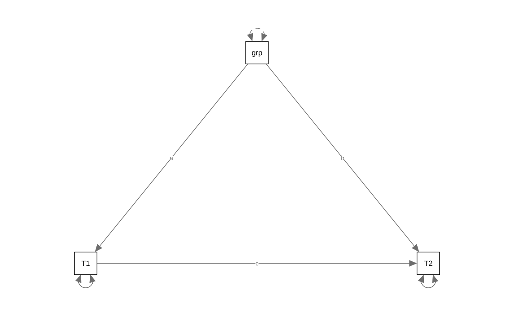
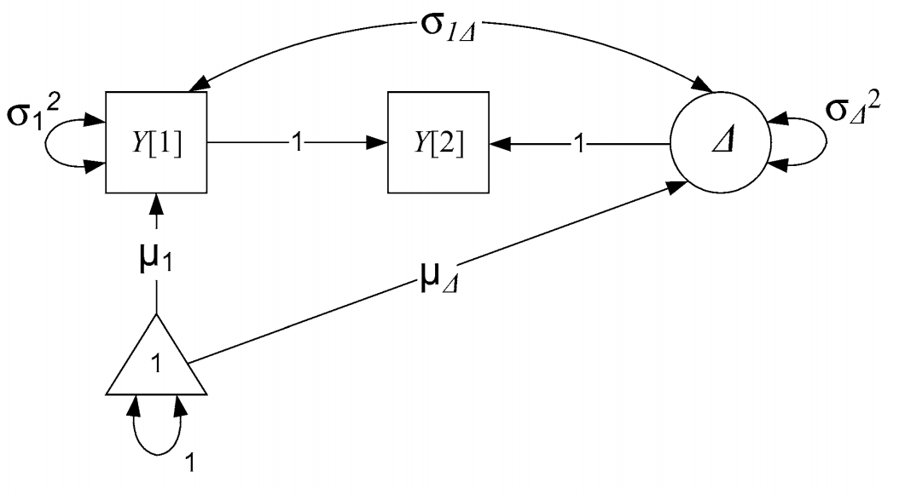
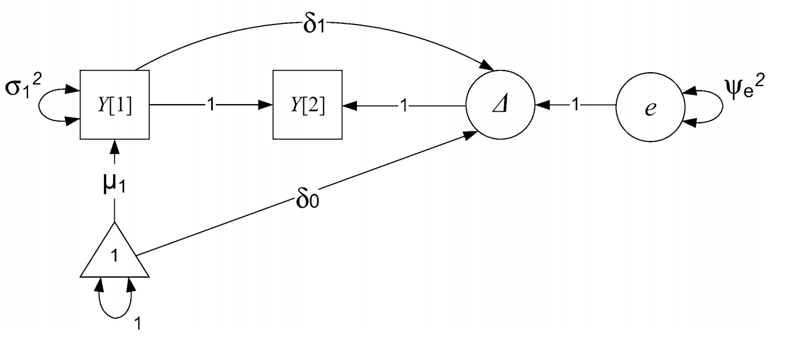
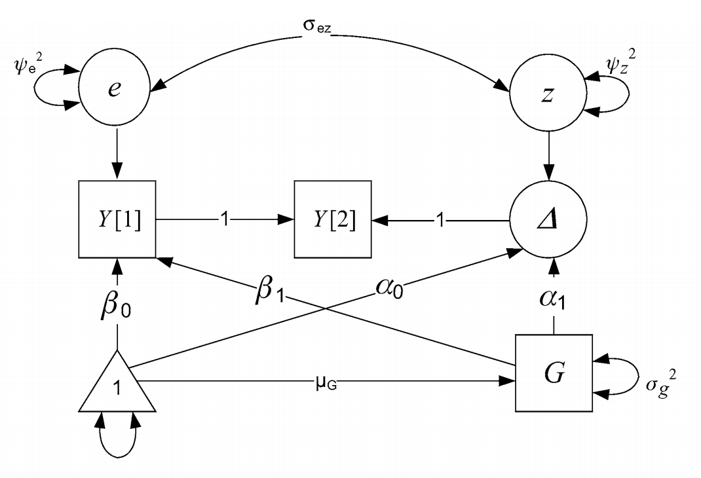
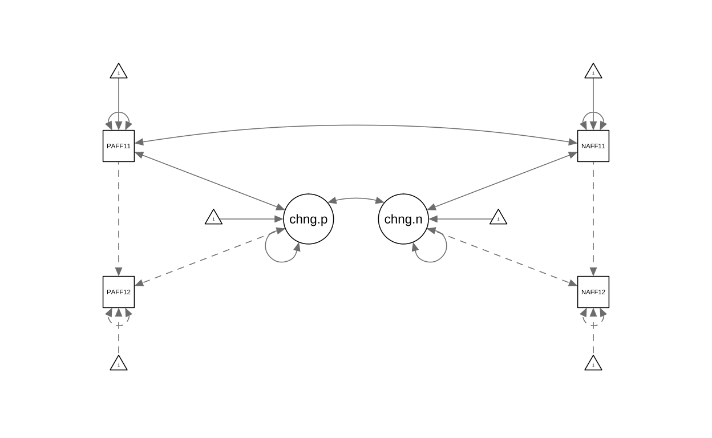
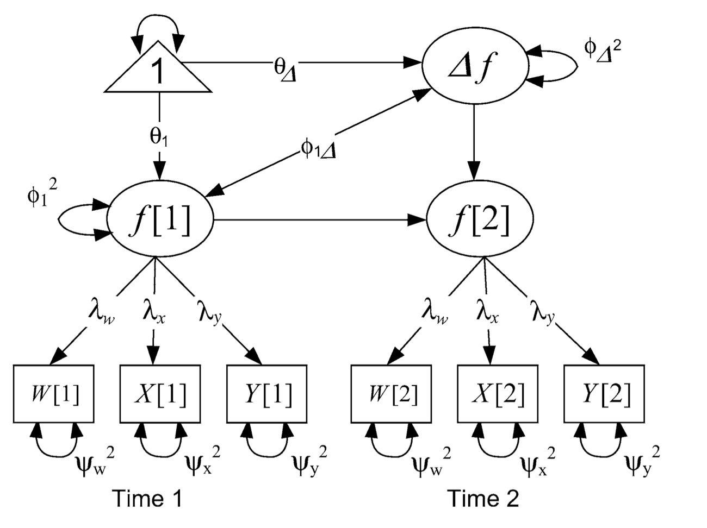
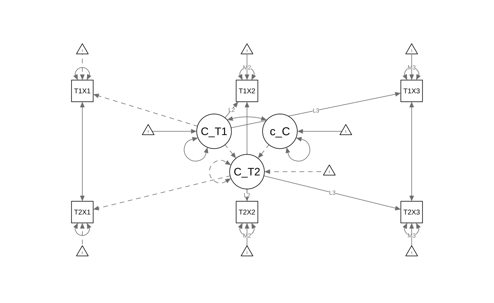
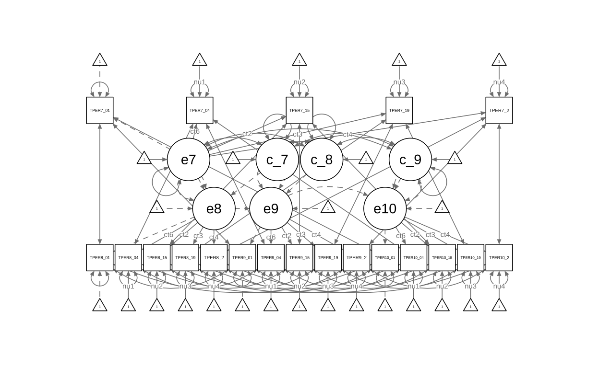

Suggested readings
https://www.annualreviews.org/doi/abs/10.1146/annurev.psych.60.110707.163612
https://www.sciencedirect.com/science/article/pii/S187892931730021X#sec0125
Two wave assessments
There are a lot of pre-post designs. In fact, the recent Nobel prize winners have a famous paper looking at difference in difference designs, basically looking at two group pre-post tests. Collecting longitudinal data is hard, so it makes sense that a lot of this type of data will be laying around. How do we analyze it? The first thing to notice is that we jumped right into MLM this semester, bypassing simple discussions. As a result, we can only really look at change with 3 or more waves.
How to measure change, or should we? https://www.gwern.net/docs/dnb/1970-cronbach.pdf This paper lays out some of the problems that occur with standard treatments of two wave assessments.
The most basic two wave form of change is a difference score. However, many have said these are problematic. The issues are: 1. hard to separate measurement error from true change 2. unreliable estimate of change 3. initial level (or last level) may be driving change. How to account for?
The second alternative is a standard residual gain/change score where you regress time 2 onto time 1. This overcomes some of the issues raised about because we are being conservative about the error by “regressing to the mean” such that people with larger changes than average will have their change scores “shrunken” to the average, must like we do with MLMs. This also helps with accounting for starting values that may be responsible for the changes, as this is literally controlling for the initial level.
The issues with this however are: 1. it isn’t true change, as you are implying people change similarly 2. it does not account for unreliability of change in a principled way 3. error, which should be random, is considered as change (ie residual is re-characterized) and it is likely associated with T1.
Lords Paradox
This has lead to what is known as Lord’s paradox. Take the two approaches above, simplified to:
lm(t2-t1 ~ group) lm(t2 ~ t1 + group)
head(df)
id group T1 T2 diff
1 1 Tx -0.30176644 -0.07218389 0.2295825445
2 2 Tx 0.06935731 0.09741980 0.0280624915
3 3 Tx 0.27111029 0.12699551 -0.1441147849
4 4 Tx -0.58642443 -0.16449642 0.4219280069
5 5 Tx 0.10728117 0.07408057 -0.0332006005
6 6 Tx 0.12651397 0.12665183 0.0001378524change score/gain score model
Call:
lm(formula = diff ~ group, data = df)
Residuals:
Min 1Q Median 3Q Max
-0.5174 -0.1133 0.0208 0.1310 0.4612
Coefficients:
Estimate Std. Error t value Pr(>|t|)
(Intercept) 0.038975 0.017300 2.253 0.0254 *
groupControl 0.004028 0.024466 0.165 0.8694
---
Signif. codes: 0 '***' 0.001 '**' 0.01 '*' 0.05 '.' 0.1 ' ' 1
Residual standard error: 0.173 on 198 degrees of freedom
Multiple R-squared: 0.0001369, Adjusted R-squared: -0.004913
F-statistic: 0.02711 on 1 and 198 DF, p-value: 0.8694
Call:
lm(formula = T2 ~ group + T1, data = df)
Residuals:
Min 1Q Median 3Q Max
-0.315819 -0.066341 0.005835 0.060977 0.268154
Coefficients:
Estimate Std. Error t value Pr(>|t|)
(Intercept) 0.01724 0.01008 1.71 0.0888 .
groupControl 0.44744 0.02648 16.90 <2e-16 ***
T1 0.44538 0.02797 15.92 <2e-16 ***
---
Signif. codes: 0 '***' 0.001 '**' 0.01 '*' 0.05 '.' 0.1 ' ' 1
Residual standard error: 0.1002 on 197 degrees of freedom
Multiple R-squared: 0.9463, Adjusted R-squared: 0.9457
F-statistic: 1734 on 2 and 197 DF, p-value: < 2.2e-16What is going on? We are asking different questions by not accounting for T1 in the former model. The change score model is accounting for the total effect (in mediation language) whereas the residualized change score model is only interested in the direct effect.
library(lavaan)
library(semPlot)
mod <- '
T1 ~ a*group
T2 ~ b*group + c*T1
# total effect
TE := (a*-1) + (a*c*1) + (b*1)
'
lord <- sem(mod, data=df)
summary(lord)
lavaan 0.6-8 ended normally after 28 iterations
Estimator ML
Optimization method NLMINB
Number of model parameters 5
Number of observations 200
Model Test User Model:
Test statistic 0.000
Degrees of freedom 0
Parameter Estimates:
Standard errors Standard
Information Expected
Information saturated (h1) model Structured
Regressions:
Estimate Std.Err z-value P(>|z|)
T1 ~
group (a) 0.800 0.036 22.317 0.000
T2 ~
group (b) 0.447 0.026 17.028 0.000
T1 (c) 0.445 0.028 16.043 0.000
Variances:
Estimate Std.Err z-value P(>|z|)
.T1 0.064 0.006 10.000 0.000
.T2 0.010 0.001 10.000 0.000
Defined Parameters:
Estimate Std.Err z-value P(>|z|)
TE 0.004 0.024 0.165 0.869semPaths(lord)

What is not immediately obvious is that the change score can be conceptualized as a series of regressions. Starting with the residualized change score model
T2 = b*T1 + e
If we assume that the relationship (b) between T1 and T2 is 1. We can re-write as:
T2 = 1*T1 + e
Then we can subtract T1 fro each side of the model, leaving:
T2 - T1 = e
In other words, a change score is equivalent to assuming a perfect regression association (correlation) between timepoints.
Here, the residual will be equal to the average change and the variance of that will be the variance in the change. This can be thought of as akin to the mean and variance of our latent slope variable.
common two wave models in path analysis form
Lets visualize each of these models via path models
Residualized change model
knitr::include_graphics("res.change.png")

Our latent residual can be conceptualized as what is left over from T2 after accounting for T1 (based on the average association between T1 and T2). We now have a measure of error/change that is not correlated to T1.
If we wanted to, because this is SEM, we could test this model against a no change model. What would this look like? Well we would fix \(\beta_1\) to zero and compare the models
lavaan 0.6-8 ended normally after 13 iterations
Estimator ML
Optimization method NLMINB
Number of model parameters 2
Number of observations 200
Model Test User Model:
Test statistic 0.000
Degrees of freedom 0
Parameter Estimates:
Standard errors Standard
Information Expected
Information saturated (h1) model Structured
Regressions:
Estimate Std.Err z-value P(>|z|)
T2 ~
T1 0.845 0.023 36.317 0.000
Variances:
Estimate Std.Err z-value P(>|z|)
.T2 0.024 0.002 10.000 0.000Latent change score
Looping back to concerns about difference scores and residualized change scores, we can address these using SEM. The problems raised above go away when: 1) measuring change latently, and thus error free. 2.) separate initial levels from change. Both of these are accomplished above. However, what is not accomplished is getting terms similar to the slope component ie a mean and a variance of a slope.
Knowing what we know about recreating difference scores via constraints, we can also make a latent change score by modifying this path model.
knitr::include_graphics("latent.change.png")

Now we can interpret the residual as change, as it is explicitly what is left over from T2 after accoutering for T1. This is starting to look like what we have been doing recently. We have: 1. Mean and variance of the slope(change), akin to our random and fixed effects in MLM 2. Covariance between intercept and slope.
To test whether or not our slope is significant we can compare that with a model where slope is constrained to be zero. Same for testing the slope variance.
library(lavaan)
latent.change <- '
#define difference score
T2 ~ 1*T1
# define the latent change variable
change =~ 1*T2
#estimate means
change ~ 1
T1 ~ 1
#Constrains mean of T2 to 0
T2 ~0*1
#estimate variance of change
change ~~ change
#estimate variance of T1 intercept
T1 ~~ T1
#constrain variance of T2 to 0
T2 ~~ 0*T2
#intercept slope covariance
change ~~ T1
'
latent.change <- sem(latent.change, data=df)
summary(latent.change)
lavaan 0.6-8 ended normally after 18 iterations
Estimator ML
Optimization method NLMINB
Number of model parameters 5
Number of observations 200
Model Test User Model:
Test statistic 0.000
Degrees of freedom 0
Parameter Estimates:
Standard errors Standard
Information Expected
Information saturated (h1) model Structured
Latent Variables:
Estimate Std.Err z-value P(>|z|)
change =~
T2 1.000
Regressions:
Estimate Std.Err z-value P(>|z|)
T2 ~
T1 1.000
Covariances:
Estimate Std.Err z-value P(>|z|)
change ~~
T1 -0.035 0.006 -5.553 0.000
Intercepts:
Estimate Std.Err z-value P(>|z|)
change 0.041 0.012 3.367 0.001
T1 0.361 0.033 10.774 0.000
.T2 0.000
Variances:
Estimate Std.Err z-value P(>|z|)
change 0.030 0.003 10.000 0.000
T1 0.224 0.022 10.000 0.000
.T2 0.000 Residualized latent change score
Note that we haven’t yet removed the variance from the T1. This may or may not be something you want to do. It is mostly helpful if change has occurred prior to T1 and you are looking at the impact of some variable on change. If you are doing an intervention that takes place after T1 then maybe stick to latent change model. If you are measuring a developmental process across time and want to make sure that initial levels aren’t influencing change then you may want to do this. If you are doing that but think that initial levels are related to the change process then maybe you would be over controlling, wiping away what may be important. ¯_(ツ)_/¯

res.latent.change <- '
#define difference score
T2 ~ 1*T1
# define the latent change variable
change =~ 1*T2
#estimate means
change ~ 1
T1 ~ 1
#Constrains mean of T2 to 0
T2 ~0*1
#estimate variance of change
change ~~ change
#estimate variance of T1 intercept
T1 ~~ T1
#constrain variance of T2 to 0
T2 ~~ 0*T2
#this is the only difference
#intercept slope regression
change ~ T1
'
res.lat.change <- sem(res.latent.change , data=df)
summary(res.lat.change)
lavaan 0.6-8 ended normally after 18 iterations
Estimator ML
Optimization method NLMINB
Number of model parameters 5
Number of observations 200
Model Test User Model:
Test statistic 0.000
Degrees of freedom 0
Parameter Estimates:
Standard errors Standard
Information Expected
Information saturated (h1) model Structured
Latent Variables:
Estimate Std.Err z-value P(>|z|)
change =~
T2 1.000
Regressions:
Estimate Std.Err z-value P(>|z|)
T2 ~
T1 1.000
change ~
T1 -0.155 0.023 -6.678 0.000
Intercepts:
Estimate Std.Err z-value P(>|z|)
.change 0.097 0.014 7.009 0.000
T1 0.361 0.033 10.774 0.000
.T2 0.000
Variances:
Estimate Std.Err z-value P(>|z|)
.change 0.024 0.002 10.000 0.000
T1 0.224 0.022 10.000 0.000
.T2 0.000 Conditional Models
What if we want to predict initial status (or control for covariate) as well as see if change is predicted by some variable?
knitr::include_graphics("cond.png")

library(lavaan)
cond <- '
#define difference score
T2 ~ 1*T1
# define the latent change variable
change =~ 1*T2
#estimate means
change ~ 1
T1 ~ 1
#Constrains mean of T2 to 0
T2 ~0*1
#estimate variance of change
change ~~ change
#estimate variance of T1 intercept
T1 ~~ T1
#constrain variance of T2 to 0
T2 ~~ 0*T2
#intercept slope covariance
change ~~ T1
# predictor predicting initial status and change
T1 ~ group
change ~ group
'
cond <- sem(cond, data=df)
summary(cond)
lavaan 0.6-8 ended normally after 37 iterations
Estimator ML
Optimization method NLMINB
Number of model parameters 7
Number of observations 200
Model Test User Model:
Test statistic 0.000
Degrees of freedom 0
Parameter Estimates:
Standard errors Standard
Information Expected
Information saturated (h1) model Structured
Latent Variables:
Estimate Std.Err z-value P(>|z|)
change =~
T2 1.000
Regressions:
Estimate Std.Err z-value P(>|z|)
T2 ~
T1 1.000
T1 ~
group 0.800 0.036 22.317 0.000
change ~
group 0.004 0.024 0.165 0.869
Covariances:
Estimate Std.Err z-value P(>|z|)
.change ~~
.T1 -0.036 0.004 -8.942 0.000
Intercepts:
Estimate Std.Err z-value P(>|z|)
.change 0.035 0.038 0.908 0.364
.T1 -0.839 0.057 -14.806 0.000
.T2 0.000
Variances:
Estimate Std.Err z-value P(>|z|)
.change 0.030 0.003 10.000 0.000
.T1 0.064 0.006 10.000 0.000
.T2 0.000 Does that change regressed on group look familiar?
This approach works the case with categorical as well as continuous predictors.
Multiple group models
As we have seen before, simple predictors does not allow the full range of tests on how two groups may differ. Just like before, we can specify multiple group models with this data.

library(lavaan)
group <- '
#define difference score
T2 ~ 1*T1
# define the latent change variable
change =~ 1*T2
#estimate means
change ~ 1
T1 ~ 1
#Constrains mean of T2 to 0
T2 ~0*1
#estimate variance of change
change ~~ change
#estimate variance of T1 intercept
T1 ~~ T1
#constrain variance of T2 to 0
T2 ~~ 0*T2
#intercept slope covariance
change ~~ T1
'
group <- sem(group, group = "group", data=df)
summary(group)
lavaan 0.6-8 ended normally after 59 iterations
Estimator ML
Optimization method NLMINB
Number of model parameters 10
Number of observations per group:
Tx 100
Control 100
Model Test User Model:
Test statistic 0.000
Degrees of freedom 0
Test statistic for each group:
Tx 0.000
Control 0.000
Parameter Estimates:
Standard errors Standard
Information Expected
Information saturated (h1) model Structured
Group 1 [Tx]:
Latent Variables:
Estimate Std.Err z-value P(>|z|)
change =~
T2 1.000
Regressions:
Estimate Std.Err z-value P(>|z|)
T2 ~
T1 1.000
Covariances:
Estimate Std.Err z-value P(>|z|)
change ~~
T1 -0.036 0.006 -6.390 0.000
Intercepts:
Estimate Std.Err z-value P(>|z|)
change 0.039 0.017 2.279 0.023
T1 -0.039 0.025 -1.569 0.117
.T2 0.000
Variances:
Estimate Std.Err z-value P(>|z|)
change 0.029 0.004 7.071 0.000
T1 0.062 0.009 7.071 0.000
.T2 0.000
Group 2 [Control]:
Latent Variables:
Estimate Std.Err z-value P(>|z|)
change =~
T2 1.000
Regressions:
Estimate Std.Err z-value P(>|z|)
T2 ~
T1 1.000
Covariances:
Estimate Std.Err z-value P(>|z|)
change ~~
T1 -0.036 0.006 -6.258 0.000
Intercepts:
Estimate Std.Err z-value P(>|z|)
change 0.043 0.017 2.482 0.013
T1 0.760 0.026 29.612 0.000
.T2 0.000
Variances:
Estimate Std.Err z-value P(>|z|)
change 0.030 0.004 7.071 0.000
T1 0.066 0.009 7.071 0.000
.T2 0.000 group2 <- '
#define difference score
T2 ~ 1*T1
# define the latent change variable
change =~ 1*T2
#estimate means (here is where we constrain)
change ~ c(s,s)*1
T1 ~ 1
#Constrains mean of T2 to 0
T2 ~0*1
#estimate variance of change
change ~~ change
#estimate variance of T1 intercept
T1 ~~ T1
#constrain variance of T2 to 0
T2 ~~ 0*T2
#intercept slope covariance
change ~~ T1
'
group2 <- sem(group2, group = "group", data=df)
summary(group2)
lavaan 0.6-8 ended normally after 59 iterations
Estimator ML
Optimization method NLMINB
Number of model parameters 10
Number of equality constraints 1
Number of observations per group:
Tx 100
Control 100
Model Test User Model:
Test statistic 0.027
Degrees of freedom 1
P-value (Chi-square) 0.869
Test statistic for each group:
Tx 0.014
Control 0.014
Parameter Estimates:
Standard errors Standard
Information Expected
Information saturated (h1) model Structured
Group 1 [Tx]:
Latent Variables:
Estimate Std.Err z-value P(>|z|)
change =~
T2 1.000
Regressions:
Estimate Std.Err z-value P(>|z|)
T2 ~
T1 1.000
Covariances:
Estimate Std.Err z-value P(>|z|)
change ~~
T1 -0.036 0.006 -6.390 0.000
Intercepts:
Estimate Std.Err z-value P(>|z|)
change (s) 0.041 0.012 3.365 0.001
T1 -0.042 0.020 -2.051 0.040
.T2 0.000
Variances:
Estimate Std.Err z-value P(>|z|)
change 0.029 0.004 7.071 0.000
T1 0.062 0.009 7.071 0.000
.T2 0.000
Group 2 [Control]:
Latent Variables:
Estimate Std.Err z-value P(>|z|)
change =~
T2 1.000
Regressions:
Estimate Std.Err z-value P(>|z|)
T2 ~
T1 1.000
Covariances:
Estimate Std.Err z-value P(>|z|)
change ~~
T1 -0.036 0.006 -6.258 0.000
Intercepts:
Estimate Std.Err z-value P(>|z|)
change (s) 0.041 0.012 3.365 0.001
T1 0.763 0.021 36.181 0.000
.T2 0.000
Variances:
Estimate Std.Err z-value P(>|z|)
change 0.030 0.004 7.071 0.000
T1 0.066 0.009 7.071 0.000
.T2 0.000 anova(group, group2)
Chi-Squared Difference Test
Df AIC BIC Chisq Chisq diff Df diff Pr(>Chisq)
group 0 -318.30 -285.31 0.0000
group2 1 -320.27 -290.58 0.0274 0.027381 1 0.8686Notice that p value from before?
Bi-variate latent change model
Similar to the bivariate latent grown model, this is helpful if we want to ask whether or not two variables change in tandem.
long <- read.csv("~/Box/5165 Applied Longitudinal Data Analysis/SEM_workshop/longitudinal.csv")
bv.lcm <- [1061 chars quoted with ''']
bv.lcm <- sem(bv.lcm, data=long)
summary(bv.lcm)
lavaan 0.6-8 ended normally after 29 iterations
Estimator ML
Optimization method NLMINB
Number of model parameters 12
Number of observations 368
Model Test User Model:
Test statistic 17.880
Degrees of freedom 2
P-value (Chi-square) 0.000
Parameter Estimates:
Standard errors Standard
Information Expected
Information saturated (h1) model Structured
Latent Variables:
Estimate Std.Err z-value P(>|z|)
change.pa =~
PosAFF12 1.000
change.na =~
NegAFF12 1.000
Regressions:
Estimate Std.Err z-value P(>|z|)
PosAFF12 ~
PosAFF11 1.000
NegAFF12 ~
NegAFF11 1.000
Covariances:
Estimate Std.Err z-value P(>|z|)
change.pa ~~
PosAFF11 -0.338 0.033 -10.247 0.000
change.na ~~
NegAFF11 -0.297 0.026 -11.565 0.000
change.pa ~~
change.na -0.070 0.015 -4.682 0.000
PosAFF11 ~~
NegAFF11 -0.056 0.015 -3.848 0.000
Intercepts:
Estimate Std.Err z-value P(>|z|)
change.pa 0.041 0.040 1.033 0.302
PosAFF11 3.212 0.037 86.264 0.000
.PosAFF12 0.000
change.na -0.110 0.032 -3.428 0.001
NegAFF11 1.522 0.034 45.326 0.000
.NegAFF12 0.000
Variances:
Estimate Std.Err z-value P(>|z|)
change.pa 0.575 0.042 13.721 0.000
PosAFF11 0.510 0.037 13.668 0.000
.PosAFF12 0.000
change.na 0.382 0.028 13.791 0.000
NegAFF11 0.415 0.030 13.713 0.000
.NegAFF12 0.000 semPaths(bv.lcm)

Latent difference/change score model
What if we had only two time points but had latent variables? This is where the model really starts to shine as we are better able to overcome some of the negatives of difference scores – namely that they are error filled. Here we will be measuring the variables latently to reduce error and constraining the measurement so that the assumption of measurement invariance holds.
knitr::include_graphics("latent.latent.png")

T1X1 T1X2 T1X3 T2X1 T2X2 T2X3
4.857927 5.415410 4.218875 5.451574 6.204090 4.819225 change <-
#setup is similar to standard latent difference except that we will not use latent variables as our repeated measures.
[1748 chars quoted with ''']
change.fit <- sem(change, data=simdat, missing="ML")
summary(change.fit, fit.measures=TRUE, standardized=TRUE, rsquare=TRUE)
lavaan 0.6-8 ended normally after 49 iterations
Estimator ML
Optimization method NLMINB
Number of model parameters 22
Number of equality constraints 4
Number of observations 500
Number of missing patterns 1
Model Test User Model:
Test statistic 3.171
Degrees of freedom 9
P-value (Chi-square) 0.957
Model Test Baseline Model:
Test statistic 1005.424
Degrees of freedom 15
P-value 0.000
User Model versus Baseline Model:
Comparative Fit Index (CFI) 1.000
Tucker-Lewis Index (TLI) 1.010
Loglikelihood and Information Criteria:
Loglikelihood user model (H0) -4825.052
Loglikelihood unrestricted model (H1) -4823.467
Akaike (AIC) 9686.104
Bayesian (BIC) 9761.967
Sample-size adjusted Bayesian (BIC) 9704.834
Root Mean Square Error of Approximation:
RMSEA 0.000
90 Percent confidence interval - lower 0.000
90 Percent confidence interval - upper 0.000
P-value RMSEA <= 0.05 0.999
Standardized Root Mean Square Residual:
SRMR 0.012
Parameter Estimates:
Standard errors Standard
Information Observed
Observed information based on Hessian
Latent Variables:
Estimate Std.Err z-value P(>|z|) Std.lv
C_T1 =~
T1X1 1.000 0.943
T1X2 (L2) 1.129 0.055 20.690 0.000 1.065
T1X3 (L3) 0.958 0.048 20.003 0.000 0.903
C_T2 =~
T2X1 1.000 1.047
T2X2 (L2) 1.129 0.055 20.690 0.000 1.182
T2X3 (L3) 0.958 0.048 20.003 0.000 1.003
change_C =~
C_T2 1.000 0.513
Std.all
0.675
0.714
0.690
0.721
0.789
0.702
0.513
Regressions:
Estimate Std.Err z-value P(>|z|) Std.lv
C_T2 ~
C_T1 1.000 0.901
Std.all
0.901
Covariances:
Estimate Std.Err z-value P(>|z|) Std.lv
C_T1 ~~
change_C -0.041 0.055 -0.747 0.455 -0.081
.T1X1 ~~
.T2X1 -0.010 0.059 -0.174 0.862 -0.010
.T1X2 ~~
.T2X2 -0.161 0.063 -2.571 0.010 -0.161
.T1X3 ~~
.T2X3 -0.102 0.055 -1.868 0.062 -0.102
Std.all
-0.081
-0.010
-0.168
-0.106
Intercepts:
Estimate Std.Err z-value P(>|z|) Std.lv
.C_T2 0.000 0.000
change_C 0.644 0.048 13.548 0.000 1.199
C_T1 4.832 0.057 84.764 0.000 5.125
.T1X1 0.000 0.000
.T1X2 (M2) -0.007 0.286 -0.026 0.980 -0.007
.T1X3 (M3) -0.417 0.250 -1.669 0.095 -0.417
.T2X1 0.000 0.000
.T2X2 (M2) -0.007 0.286 -0.026 0.980 -0.007
.T2X3 (M3) -0.417 0.250 -1.669 0.095 -0.417
Std.all
0.000
1.199
5.125
0.000
-0.005
-0.319
0.000
-0.005
-0.292
Variances:
Estimate Std.Err z-value P(>|z|) Std.lv
.C_T2 0.000 0.000
change_C 0.288 0.070 4.092 0.000 1.000
C_T1 0.889 0.095 9.322 0.000 1.000
.T1X1 1.065 0.084 12.748 0.000 1.065
.T1X2 1.091 0.093 11.669 0.000 1.091
.T1X3 0.896 0.072 12.411 0.000 0.896
.T2X1 1.014 0.082 12.329 0.000 1.014
.T2X2 0.846 0.084 10.135 0.000 0.846
.T2X3 1.037 0.082 12.684 0.000 1.037
Std.all
0.000
1.000
1.000
0.545
0.490
0.523
0.481
0.377
0.508
R-Square:
Estimate
C_T2 1.000
T1X1 0.455
T1X2 0.510
T1X3 0.477
T2X1 0.519
T2X2 0.623
T2X3 0.492semPaths(change.fit )

Same as before, we can run multiple groups analyses, introduce covariates/predictors, regress change onto time 1 and look at bi-variate processes simultanously.
Multiple wave Latent Difference Score model (LDS)
What is especially nice is that we can extend the model into more than 2 waves. This is a rethinking of how to assess 3+ waves of data. As opposed to thinking of a standard growth process that is unchanging, this instead reconceptualizing the change as a set of difference scores. You can increase, then decrease, then increase, for example. There is flexibility in this approach. First, you can get more precise assessments of when change is occuring. If you are measuring grades 5-12 with some event predictor maybe the change only occured during grades 6-7. How would you test that in a standard growth model? Second, you can model more non-linear associations with parameters that are easier to interpret than quadratics and higher order terms.
However there is also downsides. First, there are more parameters to estimate. More parameters mean a more difficult time in estimating the model. So it is possible that you have not as accurate (mean est) and not as precise (larger SEs) compared to a more simplistic model like a growth model. Second, there are increased analytic choices which could lead to confusing, p-hacking and all around disillusion on what is the correct model. For example, do you model all change paramters to have similar covariances across time? Do you constrain variance to be the same and allow the means to differ – or vice versa? Do you impose MI?
y_t_all <- read.csv("~/Box/5165 Applied Longitudinal Data Analysis/ALDA/combined_models.csv")
mw.model <-
[2042 chars quoted with ''']
mw.model <- sem(mw.model, data=y_t_all , missing="ML")
summary(mw.model, fit.measures=TRUE, standardized=TRUE)
lavaan 0.6-8 ended normally after 73 iterations
Estimator ML
Optimization method NLMINB
Number of model parameters 96
Number of equality constraints 24
Used Total
Number of observations 864 1067
Number of missing patterns 29
Model Test User Model:
Test statistic 833.294
Degrees of freedom 158
P-value (Chi-square) 0.000
Model Test Baseline Model:
Test statistic 6120.154
Degrees of freedom 190
P-value 0.000
User Model versus Baseline Model:
Comparative Fit Index (CFI) 0.886
Tucker-Lewis Index (TLI) 0.863
Loglikelihood and Information Criteria:
Loglikelihood user model (H0) -11678.547
Loglikelihood unrestricted model (H1) -11261.900
Akaike (AIC) 23501.094
Bayesian (BIC) 23843.927
Sample-size adjusted Bayesian (BIC) 23615.274
Root Mean Square Error of Approximation:
RMSEA 0.070
90 Percent confidence interval - lower 0.066
90 Percent confidence interval - upper 0.075
P-value RMSEA <= 0.05 0.000
Standardized Root Mean Square Residual:
SRMR 0.064
Parameter Estimates:
Standard errors Standard
Information Observed
Observed information based on Hessian
Latent Variables:
Estimate Std.Err z-value P(>|z|) Std.lv
e7 =~
TPER7_0 1.000 1.007
TPER7_0 (cat6) 0.789 0.024 32.827 0.000 0.794
TPER7_1 (cat2) 0.987 0.022 44.223 0.000 0.994
TPER7_1 (cat3) 1.020 0.029 35.076 0.000 1.027
TPER7_2 (cat4) 1.022 0.030 34.287 0.000 1.030
e8 =~
TPER8_0 1.000 1.009
TPER8_0 (cat6) 0.789 0.024 32.827 0.000 0.796
TPER8_1 (cat2) 0.987 0.022 44.223 0.000 0.996
TPER8_1 (cat3) 1.020 0.029 35.076 0.000 1.029
TPER8_2 (cat4) 1.022 0.030 34.287 0.000 1.032
e9 =~
TPER9_0 1.000 1.032
TPER9_0 (cat6) 0.789 0.024 32.827 0.000 0.814
TPER9_1 (cat2) 0.987 0.022 44.223 0.000 1.018
TPER9_1 (cat3) 1.020 0.029 35.076 0.000 1.052
TPER9_2 (cat4) 1.022 0.030 34.287 0.000 1.055
e10 =~
TPER10_ 1.000 0.971
TPER10_ (cat6) 0.789 0.024 32.827 0.000 0.766
TPER10_ (cat2) 0.987 0.022 44.223 0.000 0.958
TPER10_ (cat3) 1.020 0.029 35.076 0.000 0.990
TPER10_ (cat4) 1.022 0.030 34.287 0.000 0.993
c_7.8 =~
e8 1.000 1.024
c_8.9 =~
e9 1.000 0.949
c_9.10 =~
e10 1.000 1.017
Std.all
0.872
0.726
0.854
0.768
0.755
0.871
0.703
0.855
0.758
0.746
0.856
0.694
0.855
0.781
0.779
0.855
0.699
0.815
0.784
0.778
1.024
0.949
1.017
Regressions:
Estimate Std.Err z-value P(>|z|) Std.lv
e8 ~
e7 1.000 0.998
e9 ~
e8 1.000 0.978
e10 ~
e9 1.000 1.063
Std.all
0.998
0.978
1.063
Covariances:
Estimate Std.Err z-value P(>|z|) Std.lv
e7 ~~
c_7.8 -0.532 0.073 -7.291 0.000 -0.511
c_8.9 0.115 0.073 1.568 0.117 0.117
c_9.10 -0.085 0.117 -0.722 0.470 -0.085
c_7.8 ~~
c_8.9 -0.571 0.086 -6.606 0.000 -0.565
c_9.10 0.018 0.134 0.131 0.896 0.017
c_8.9 ~~
c_9.10 -0.482 0.089 -5.437 0.000 -0.498
.TPER7_01 ~~
.TPER8_01 0.049 0.030 1.634 0.102 0.049
.TPER9_01 0.087 0.035 2.457 0.014 0.087
.TPER10_01 -0.205 0.052 -3.936 0.000 -0.205
.TPER8_01 ~~
.TPER9_01 0.079 0.028 2.814 0.005 0.079
.TPER10_01 0.061 0.035 1.749 0.080 0.061
.TPER9_01 ~~
.TPER10_01 0.021 0.034 0.616 0.538 0.021
.TPER7_04 ~~
.TPER8_04 0.163 0.039 4.133 0.000 0.163
.TPER9_04 0.141 0.051 2.769 0.006 0.141
.TPER10_04 0.078 0.094 0.829 0.407 0.078
.TPER8_04 ~~
.TPER9_04 0.225 0.043 5.289 0.000 0.225
.TPER10_04 0.086 0.053 1.604 0.109 0.086
.TPER9_04 ~~
.TPER10_04 0.201 0.047 4.234 0.000 0.201
.TPER7_15 ~~
.TPER8_15 0.022 0.030 0.725 0.468 0.022
.TPER9_15 0.008 0.034 0.241 0.810 0.008
.TPER10_15 -0.137 0.070 -1.958 0.050 -0.137
.TPER8_15 ~~
.TPER9_15 0.027 0.028 0.948 0.343 0.027
.TPER10_15 0.013 0.042 0.322 0.747 0.013
.TPER9_15 ~~
.TPER10_15 0.008 0.033 0.240 0.810 0.008
.TPER7_19R ~~
.TPER8_19R 0.104 0.055 1.890 0.059 0.104
.TPER9_19R -0.074 0.060 -1.233 0.218 -0.074
.TPER10_19R 0.189 0.092 2.059 0.040 0.189
.TPER8_19R ~~
.TPER9_19R 0.110 0.053 2.078 0.038 0.110
.TPER10_19R 0.053 0.069 0.775 0.438 0.053
.TPER9_19R ~~
.TPER10_19R -0.036 0.052 -0.690 0.490 -0.036
.TPER7_22R ~~
.TPER8_22R 0.143 0.060 2.406 0.016 0.143
.TPER9_22R 0.019 0.061 0.304 0.761 0.019
.TPER10_22R 0.160 0.108 1.487 0.137 0.160
.TPER8_22R ~~
.TPER9_22R 0.049 0.052 0.941 0.347 0.049
.TPER10_22R -0.014 0.062 -0.227 0.820 -0.014
.TPER9_22R ~~
.TPER10_22R 0.025 0.054 0.467 0.640 0.025
Std.all
-0.511
0.117
-0.085
-0.565
0.017
-0.498
0.151
0.246
-0.612
0.222
0.183
0.056
0.269
0.222
0.132
0.330
0.136
0.304
0.059
0.022
-0.332
0.071
0.033
0.019
0.137
-0.103
0.282
0.148
0.077
-0.054
0.174
0.024
0.223
0.063
-0.019
0.037
Intercepts:
Estimate Std.Err z-value P(>|z|) Std.lv
.e8 0.000 0.000
.e9 0.000 0.000
.e10 0.000 0.000
c_7.8 -0.015 0.056 -0.259 0.795 -0.014
c_8.9 -0.012 0.052 -0.225 0.822 -0.012
c_9.10 0.119 0.058 2.054 0.040 0.121
e7 3.681 0.051 72.878 0.000 3.655
.TPER7_01 0.000 0.000
.TPER7_04 (nu1) 0.579 0.092 6.266 0.000 0.579
.TPER7_15 (nu2) -0.059 0.086 -0.689 0.491 -0.059
.TPER7_19 (nu3) -0.461 0.111 -4.161 0.000 -0.461
.TPER7_22 (nu4) -0.581 0.114 -5.109 0.000 -0.581
.TPER8_01 0.000 0.000
.TPER8_04 (nu1) 0.579 0.092 6.266 0.000 0.579
.TPER8_15 (nu2) -0.059 0.086 -0.689 0.491 -0.059
.TPER8_19 (nu3) -0.461 0.111 -4.161 0.000 -0.461
.TPER8_22 (nu4) -0.581 0.114 -5.109 0.000 -0.581
.TPER9_01 0.000 0.000
.TPER9_04 (nu1) 0.579 0.092 6.266 0.000 0.579
.TPER9_15 (nu2) -0.059 0.086 -0.689 0.491 -0.059
.TPER9_19 (nu3) -0.461 0.111 -4.161 0.000 -0.461
.TPER9_22 (nu4) -0.581 0.114 -5.109 0.000 -0.581
.TPER10_0 0.000 0.000
.TPER10_0 (nu1) 0.579 0.092 6.266 0.000 0.579
.TPER10_1 (nu2) -0.059 0.086 -0.689 0.491 -0.059
.TPER10_1 (nu3) -0.461 0.111 -4.161 0.000 -0.461
.TPER10_2 (nu4) -0.581 0.114 -5.109 0.000 -0.581
Std.all
0.000
0.000
0.000
-0.014
-0.012
0.121
3.655
0.000
0.529
-0.051
-0.345
-0.426
0.000
0.511
-0.051
-0.340
-0.420
0.000
0.494
-0.049
-0.343
-0.428
0.000
0.528
-0.050
-0.366
-0.455
Variances:
Estimate Std.Err z-value P(>|z|) Std.lv
.e8 0.000 0.000
.e9 0.000 0.000
.e10 0.000 0.000
e7 1.014 0.083 12.153 0.000 1.000
c_7.8 1.067 0.108 9.831 0.000 1.000
c_8.9 0.960 0.099 9.655 0.000 1.000
c_9.10 0.975 0.104 9.412 0.000 1.000
.TPER7_01 0.321 0.035 9.069 0.000 0.321
.TPER7_04 0.566 0.046 12.253 0.000 0.566
.TPER7_15 0.368 0.035 10.408 0.000 0.368
.TPER7_19R 0.733 0.063 11.624 0.000 0.733
.TPER7_22R 0.800 0.067 11.858 0.000 0.800
.TPER8_01 0.325 0.031 10.530 0.000 0.325
.TPER8_04 0.650 0.046 14.201 0.000 0.650
.TPER8_15 0.366 0.031 11.624 0.000 0.366
.TPER8_19R 0.786 0.059 13.328 0.000 0.786
.TPER8_22R 0.850 0.063 13.482 0.000 0.850
.TPER9_01 0.388 0.034 11.345 0.000 0.388
.TPER9_04 0.713 0.049 14.525 0.000 0.713
.TPER9_15 0.380 0.033 11.634 0.000 0.380
.TPER9_19R 0.706 0.055 12.837 0.000 0.706
.TPER9_22R 0.724 0.056 12.918 0.000 0.724
.TPER10_01 0.348 0.039 8.953 0.000 0.348
.TPER10_04 0.615 0.053 11.579 0.000 0.615
.TPER10_15 0.465 0.045 10.239 0.000 0.465
.TPER10_19R 0.613 0.059 10.412 0.000 0.613
.TPER10_22R 0.642 0.062 10.427 0.000 0.642
Std.all
0.000
0.000
0.000
1.000
1.000
1.000
1.000
0.240
0.473
0.271
0.410
0.430
0.242
0.506
0.270
0.426
0.444
0.267
0.518
0.268
0.389
0.394
0.270
0.512
0.336
0.385
0.394semPaths(mw.model)

Gross. We have to draw this by hand to get a good representation.
predicting change
c.mw.model <-
[2111 chars quoted with ''']
c.mw.model <- sem(c.mw.model, data=y_t_all , missing="ML")
summary(c.mw.model, fit.measures=TRUE, standardized=TRUE)
lavaan 0.6-8 ended normally after 79 iterations
Estimator ML
Optimization method NLMINB
Number of model parameters 99
Number of equality constraints 24
Used Total
Number of observations 999 1067
Number of missing patterns 30
Model Test User Model:
Test statistic 871.333
Degrees of freedom 175
P-value (Chi-square) 0.000
Model Test Baseline Model:
Test statistic 5976.297
Degrees of freedom 210
P-value 0.000
User Model versus Baseline Model:
Comparative Fit Index (CFI) 0.879
Tucker-Lewis Index (TLI) 0.855
Loglikelihood and Information Criteria:
Loglikelihood user model (H0) -11131.232
Loglikelihood unrestricted model (H1) -10695.565
Akaike (AIC) 22412.463
Bayesian (BIC) 22780.470
Sample-size adjusted Bayesian (BIC) 22542.266
Root Mean Square Error of Approximation:
RMSEA 0.063
90 Percent confidence interval - lower 0.059
90 Percent confidence interval - upper 0.067
P-value RMSEA <= 0.05 0.000
Standardized Root Mean Square Residual:
SRMR 0.065
Parameter Estimates:
Standard errors Standard
Information Observed
Observed information based on Hessian
Latent Variables:
Estimate Std.Err z-value P(>|z|) Std.lv
e7 =~
TPER7_0 1.000 1.009
TPER7_0 (cat6) 0.783 0.024 32.145 0.000 0.790
TPER7_1 (cat2) 0.987 0.023 43.539 0.000 0.996
TPER7_1 (cat3) 1.011 0.030 34.231 0.000 1.020
TPER7_2 (cat4) 1.015 0.030 33.472 0.000 1.024
e8 =~
TPER8_0 1.000 1.010
TPER8_0 (cat6) 0.783 0.024 32.145 0.000 0.791
TPER8_1 (cat2) 0.987 0.023 43.539 0.000 0.997
TPER8_1 (cat3) 1.011 0.030 34.231 0.000 1.022
TPER8_2 (cat4) 1.015 0.030 33.472 0.000 1.026
e9 =~
TPER9_0 1.000 1.037
TPER9_0 (cat6) 0.783 0.024 32.145 0.000 0.813
TPER9_1 (cat2) 0.987 0.023 43.539 0.000 1.024
TPER9_1 (cat3) 1.011 0.030 34.231 0.000 1.049
TPER9_2 (cat4) 1.015 0.030 33.472 0.000 1.053
e10 =~
TPER10_ 1.000 0.971
TPER10_ (cat6) 0.783 0.024 32.145 0.000 0.760
TPER10_ (cat2) 0.987 0.023 43.539 0.000 0.958
TPER10_ (cat3) 1.011 0.030 34.231 0.000 0.981
TPER10_ (cat4) 1.015 0.030 33.472 0.000 0.985
c_7.8 =~
e8 1.000 1.032
c_8.9 =~
e9 1.000 0.940
c_9.10 =~
e10 1.000 1.017
Std.all
0.872
0.724
0.854
0.766
0.754
0.875
0.701
0.855
0.753
0.741
0.857
0.704
0.859
0.779
0.779
0.859
0.685
0.820
0.777
0.775
1.032
0.940
1.017
Regressions:
Estimate Std.Err z-value P(>|z|) Std.lv
e8 ~
e7 1.000 0.998
e9 ~
e8 1.000 0.974
e10 ~
e9 1.000 1.069
c_7.8 ~
SEX1 0.206 0.086 2.387 0.017 0.197
c_8.9 ~
SEX1 0.067 0.106 0.632 0.527 0.069
c_9.10 ~
SEX1 0.075 0.120 0.626 0.532 0.076
Std.all
0.998
0.974
1.069
0.099
0.034
0.038
Covariances:
Estimate Std.Err z-value P(>|z|) Std.lv
e7 ~~
.c_7.8 -0.542 0.074 -7.359 0.000 -0.518
.c_8.9 0.110 0.074 1.494 0.135 0.112
.c_9.10 -0.081 0.117 -0.689 0.491 -0.081
.c_7.8 ~~
.c_8.9 -0.562 0.086 -6.504 0.000 -0.555
.c_9.10 0.004 0.132 0.033 0.974 0.004
.c_8.9 ~~
.c_9.10 -0.483 0.088 -5.474 0.000 -0.502
.TPER7_01 ~~
.TPER8_01 0.047 0.029 1.582 0.114 0.047
.TPER9_01 0.084 0.036 2.370 0.018 0.084
.TPER10_01 -0.197 0.052 -3.762 0.000 -0.197
.TPER8_01 ~~
.TPER9_01 0.069 0.028 2.443 0.015 0.069
.TPER10_01 0.059 0.034 1.747 0.081 0.059
.TPER9_01 ~~
.TPER10_01 0.028 0.035 0.815 0.415 0.028
.TPER7_04 ~~
.TPER8_04 0.162 0.039 4.110 0.000 0.162
.TPER9_04 0.135 0.049 2.782 0.005 0.135
.TPER10_04 0.090 0.098 0.920 0.357 0.090
.TPER8_04 ~~
.TPER9_04 0.213 0.041 5.158 0.000 0.213
.TPER10_04 0.092 0.056 1.630 0.103 0.092
.TPER9_04 ~~
.TPER10_04 0.224 0.050 4.459 0.000 0.224
.TPER7_15 ~~
.TPER8_15 0.022 0.030 0.733 0.464 0.022
.TPER9_15 0.005 0.034 0.137 0.891 0.005
.TPER10_15 -0.130 0.069 -1.886 0.059 -0.130
.TPER8_15 ~~
.TPER9_15 0.026 0.028 0.918 0.359 0.026
.TPER10_15 0.015 0.040 0.366 0.714 0.015
.TPER9_15 ~~
.TPER10_15 0.030 0.034 0.863 0.388 0.030
.TPER7_19R ~~
.TPER8_19R 0.108 0.055 1.948 0.051 0.108
.TPER9_19R -0.073 0.060 -1.205 0.228 -0.073
.TPER10_19R 0.193 0.093 2.071 0.038 0.193
.TPER8_19R ~~
.TPER9_19R 0.111 0.054 2.046 0.041 0.111
.TPER10_19R 0.053 0.070 0.763 0.445 0.053
.TPER9_19R ~~
.TPER10_19R -0.054 0.056 -0.970 0.332 -0.054
.TPER7_22R ~~
.TPER8_22R 0.145 0.060 2.423 0.015 0.145
.TPER9_22R 0.021 0.060 0.348 0.728 0.021
.TPER10_22R 0.165 0.107 1.538 0.124 0.165
.TPER8_22R ~~
.TPER9_22R 0.049 0.052 0.944 0.345 0.049
.TPER10_22R -0.011 0.062 -0.182 0.856 -0.011
.TPER9_22R ~~
.TPER10_22R 0.050 0.057 0.874 0.382 0.050
Std.all
-0.518
0.112
-0.081
-0.555
0.004
-0.502
0.147
0.239
-0.604
0.198
0.183
0.078
0.267
0.219
0.148
0.323
0.141
0.338
0.060
0.012
-0.321
0.069
0.037
0.072
0.141
-0.101
0.284
0.146
0.075
-0.081
0.175
0.028
0.230
0.062
-0.015
0.073
Intercepts:
Estimate Std.Err z-value P(>|z|) Std.lv
.e8 0.000 0.000
.e9 0.000 0.000
.e10 0.000 0.000
.c_7.8 -0.325 0.142 -2.284 0.022 -0.312
.c_8.9 -0.104 0.166 -0.628 0.530 -0.107
.c_9.10 0.008 0.190 0.041 0.968 0.008
e7 3.689 0.051 72.452 0.000 3.657
.TPER7_01 0.000 0.000
.TPER7_04 (nu1) 0.613 0.094 6.526 0.000 0.613
.TPER7_15 (nu2) -0.061 0.087 -0.703 0.482 -0.061
.TPER7_19 (nu3) -0.433 0.113 -3.837 0.000 -0.433
.TPER7_22 (nu4) -0.547 0.116 -4.719 0.000 -0.547
.TPER8_01 0.000 0.000
.TPER8_04 (nu1) 0.613 0.094 6.526 0.000 0.613
.TPER8_15 (nu2) -0.061 0.087 -0.703 0.482 -0.061
.TPER8_19 (nu3) -0.433 0.113 -3.837 0.000 -0.433
.TPER8_22 (nu4) -0.547 0.116 -4.719 0.000 -0.547
.TPER9_01 0.000 0.000
.TPER9_04 (nu1) 0.613 0.094 6.526 0.000 0.613
.TPER9_15 (nu2) -0.061 0.087 -0.703 0.482 -0.061
.TPER9_19 (nu3) -0.433 0.113 -3.837 0.000 -0.433
.TPER9_22 (nu4) -0.547 0.116 -4.719 0.000 -0.547
.TPER10_0 0.000 0.000
.TPER10_0 (nu1) 0.613 0.094 6.526 0.000 0.613
.TPER10_1 (nu2) -0.061 0.087 -0.703 0.482 -0.061
.TPER10_1 (nu3) -0.433 0.113 -3.837 0.000 -0.433
.TPER10_2 (nu4) -0.547 0.116 -4.719 0.000 -0.547
Std.all
0.000
0.000
0.000
-0.312
-0.107
0.008
3.657
0.000
0.562
-0.053
-0.325
-0.402
0.000
0.543
-0.053
-0.319
-0.395
0.000
0.531
-0.051
-0.322
-0.404
0.000
0.552
-0.052
-0.343
-0.430
Variances:
Estimate Std.Err z-value P(>|z|) Std.lv
.e8 0.000 0.000
.e9 0.000 0.000
.e10 0.000 0.000
e7 1.018 0.084 12.144 0.000 1.000
.c_7.8 1.078 0.110 9.814 0.000 0.990
.c_8.9 0.951 0.099 9.632 0.000 0.999
.c_9.10 0.973 0.108 9.011 0.000 0.999
.TPER7_01 0.320 0.035 9.025 0.000 0.320
.TPER7_04 0.568 0.046 12.254 0.000 0.568
.TPER7_15 0.368 0.035 10.392 0.000 0.368
.TPER7_19R 0.732 0.063 11.631 0.000 0.732
.TPER7_22R 0.798 0.067 11.857 0.000 0.798
.TPER8_01 0.313 0.030 10.313 0.000 0.313
.TPER8_04 0.648 0.046 14.180 0.000 0.648
.TPER8_15 0.366 0.032 11.610 0.000 0.366
.TPER8_19R 0.798 0.060 13.376 0.000 0.798
.TPER8_22R 0.863 0.064 13.515 0.000 0.863
.TPER9_01 0.388 0.035 10.934 0.000 0.388
.TPER9_04 0.672 0.048 13.878 0.000 0.672
.TPER9_15 0.374 0.034 11.144 0.000 0.374
.TPER9_19R 0.714 0.057 12.438 0.000 0.714
.TPER9_22R 0.720 0.058 12.462 0.000 0.720
.TPER10_01 0.334 0.040 8.302 0.000 0.334
.TPER10_04 0.655 0.060 10.998 0.000 0.655
.TPER10_15 0.447 0.047 9.528 0.000 0.447
.TPER10_19R 0.630 0.064 9.904 0.000 0.630
.TPER10_22R 0.644 0.065 9.844 0.000 0.644
Std.all
0.000
0.000
0.000
1.000
0.990
0.999
0.999
0.239
0.476
0.271
0.413
0.432
0.235
0.508
0.269
0.433
0.451
0.265
0.505
0.263
0.394
0.394
0.262
0.531
0.327
0.396
0.399adding intercept and growth factors to LDS models
One top of this type of model you can fit a growth curve. Why? Can capture both general trends and more fine-grained temporal dynamics. This can be especially useful when trying to separate a known, more stable change occurring during development (e.g.natural aging process) from more specific fluctuations due to external factors (e.g., life events).
However, there are some differences from our standard latent growth model. First, if the difference scores are equal across time the mean of the change factor will be 0. This is because the latent change variable are using difference scores as indicators, not standard indicators. As such, this can be interpreted as a constant rate of change (or not).
If you want to get at a standard interpretation of a growth curve, seperate from change at a specific time point, you can define the change score with loadings of 1 for all difference score variables as opposed to increasing linearly eg 1,2,3,4,5…
lg.mw.model <-
[2655 chars quoted with ''']
lg.mw.model <- sem(lg.mw.model, data=y_t_all , missing="ML")
summary(lg.mw.model, fit.measures=TRUE)
lavaan 0.6-8 ended normally after 63 iterations
Estimator ML
Optimization method NLMINB
Number of model parameters 90
Number of equality constraints 24
Used Total
Number of observations 864 1067
Number of missing patterns 29
Model Test User Model:
Test statistic 949.774
Degrees of freedom 164
P-value (Chi-square) 0.000
Model Test Baseline Model:
Test statistic 6120.154
Degrees of freedom 190
P-value 0.000
User Model versus Baseline Model:
Comparative Fit Index (CFI) 0.867
Tucker-Lewis Index (TLI) 0.846
Loglikelihood and Information Criteria:
Loglikelihood user model (H0) -11736.787
Loglikelihood unrestricted model (H1) -11261.900
Akaike (AIC) 23605.574
Bayesian (BIC) 23919.837
Sample-size adjusted Bayesian (BIC) 23710.238
Root Mean Square Error of Approximation:
RMSEA 0.074
90 Percent confidence interval - lower 0.070
90 Percent confidence interval - upper 0.079
P-value RMSEA <= 0.05 0.000
Standardized Root Mean Square Residual:
SRMR 0.156
Parameter Estimates:
Standard errors Standard
Information Observed
Observed information based on Hessian
Latent Variables:
Estimate Std.Err z-value P(>|z|)
e7 =~
TPER7_0 1.000
TPER7_0 (cat6) 0.790 0.024 32.432 0.000
TPER7_1 (cat2) 0.986 0.022 43.857 0.000
TPER7_1 (cat3) 1.024 0.029 35.060 0.000
TPER7_2 (cat4) 1.024 0.030 34.275 0.000
e8 =~
TPER8_0 1.000
TPER8_0 (cat6) 0.790 0.024 32.432 0.000
TPER8_1 (cat2) 0.986 0.022 43.857 0.000
TPER8_1 (cat3) 1.024 0.029 35.060 0.000
TPER8_2 (cat4) 1.024 0.030 34.275 0.000
e9 =~
TPER9_0 1.000
TPER9_0 (cat6) 0.790 0.024 32.432 0.000
TPER9_1 (cat2) 0.986 0.022 43.857 0.000
TPER9_1 (cat3) 1.024 0.029 35.060 0.000
TPER9_2 (cat4) 1.024 0.030 34.275 0.000
e10 =~
TPER10_ 1.000
TPER10_ (cat6) 0.790 0.024 32.432 0.000
TPER10_ (cat2) 0.986 0.022 43.857 0.000
TPER10_ (cat3) 1.024 0.029 35.060 0.000
TPER10_ (cat4) 1.024 0.030 34.275 0.000
c_7.8 =~
e8 1.000
c_8.9 =~
e9 1.000
c_9.10 =~
e10 1.000
E.change =~
e8 1.000
e9 2.000
e10 3.000
Regressions:
Estimate Std.Err z-value P(>|z|)
e8 ~
e7 1.000
e9 ~
e8 1.000
e10 ~
e9 1.000
Covariances:
Estimate Std.Err z-value P(>|z|)
e7 ~~
c_7.8 0.000
c_8.9 0.000
c_9.10 0.000
c_7.8 ~~
c_8.9 0.000
c_9.10 0.000
c_8.9 ~~
c_9.10 0.000
.TPER7_01 ~~
.TPER8_01 0.018 0.030 0.586 0.558
.TPER9_01 0.090 0.036 2.505 0.012
.TPER10_01 -0.204 0.053 -3.819 0.000
.TPER8_01 ~~
.TPER9_01 0.072 0.028 2.569 0.010
.TPER10_01 0.067 0.036 1.868 0.062
.TPER9_01 ~~
.TPER10_01 0.028 0.034 0.838 0.402
.TPER7_04 ~~
.TPER8_04 0.149 0.040 3.766 0.000
.TPER9_04 0.150 0.051 2.936 0.003
.TPER10_04 0.109 0.096 1.134 0.257
.TPER8_04 ~~
.TPER9_04 0.222 0.043 5.209 0.000
.TPER10_04 0.085 0.054 1.585 0.113
.TPER9_04 ~~
.TPER10_04 0.203 0.048 4.251 0.000
.TPER7_15 ~~
.TPER8_15 0.007 0.030 0.234 0.815
.TPER9_15 0.009 0.034 0.270 0.787
.TPER10_15 -0.137 0.072 -1.904 0.057
.TPER8_15 ~~
.TPER9_15 0.025 0.028 0.898 0.369
.TPER10_15 0.016 0.042 0.388 0.698
.TPER9_15 ~~
.TPER10_15 0.010 0.033 0.294 0.769
.TPER7_19R ~~
.TPER8_19R 0.111 0.054 2.034 0.042
.TPER9_19R -0.062 0.060 -1.032 0.302
.TPER10_19R 0.179 0.093 1.925 0.054
.TPER8_19R ~~
.TPER9_19R 0.104 0.053 1.972 0.049
.TPER10_19R 0.050 0.069 0.728 0.467
.TPER9_19R ~~
.TPER10_19R -0.037 0.052 -0.714 0.475
.TPER7_22R ~~
.TPER8_22R 0.144 0.059 2.443 0.015
.TPER9_22R 0.026 0.061 0.427 0.670
.TPER10_22R 0.141 0.109 1.293 0.196
.TPER8_22R ~~
.TPER9_22R 0.041 0.052 0.784 0.433
.TPER10_22R -0.010 0.062 -0.167 0.867
.TPER9_22R ~~
.TPER10_22R 0.020 0.054 0.375 0.707
e7 ~~
E.change -0.092 0.016 -5.901 0.000
c_7.8 ~~
E.change 0.000
c_8.9 ~~
E.change 0.000
c_9.10 ~~
E.change 0.000
Intercepts:
Estimate Std.Err z-value P(>|z|)
.e8 0.000
.e9 0.000
.e10 0.000
c_7.8 0.000
c_8.9 0.000
c_9.10 0.000
e7 3.668 0.043 84.664 0.000
.TPER7_01 0.000
.TPER7_04 (nu1) 0.572 0.094 6.114 0.000
.TPER7_15 (nu2) -0.058 0.086 -0.676 0.499
.TPER7_19 (nu3) -0.477 0.111 -4.287 0.000
.TPER7_22 (nu4) -0.587 0.114 -5.159 0.000
.TPER8_01 0.000
.TPER8_04 (nu1) 0.572 0.094 6.114 0.000
.TPER8_15 (nu2) -0.058 0.086 -0.676 0.499
.TPER8_19 (nu3) -0.477 0.111 -4.287 0.000
.TPER8_22 (nu4) -0.587 0.114 -5.159 0.000
.TPER9_01 0.000
.TPER9_04 (nu1) 0.572 0.094 6.114 0.000
.TPER9_15 (nu2) -0.058 0.086 -0.676 0.499
.TPER9_19 (nu3) -0.477 0.111 -4.287 0.000
.TPER9_22 (nu4) -0.587 0.114 -5.159 0.000
.TPER10_0 0.000
.TPER10_0 (nu1) 0.572 0.094 6.114 0.000
.TPER10_1 (nu2) -0.058 0.086 -0.676 0.499
.TPER10_1 (nu3) -0.477 0.111 -4.287 0.000
.TPER10_2 (nu4) -0.587 0.114 -5.159 0.000
E.change 0.015 0.010 1.448 0.148
Variances:
Estimate Std.Err z-value P(>|z|)
.e8 0.000
.e9 0.000
.e10 0.000
e7 0.869 0.066 13.069 0.000
c_7.8 0.712 0.059 12.107 0.000
c_8.9 1.094 0.096 11.395 0.000
c_9.10 1.997 0.206 9.674 0.000
.TPER7_01 0.338 0.036 9.411 0.000
.TPER7_04 0.575 0.047 12.274 0.000
.TPER7_15 0.378 0.036 10.549 0.000
.TPER7_19R 0.742 0.063 11.779 0.000
.TPER7_22R 0.807 0.067 12.024 0.000
.TPER8_01 0.338 0.031 10.782 0.000
.TPER8_04 0.654 0.046 14.228 0.000
.TPER8_15 0.366 0.031 11.648 0.000
.TPER8_19R 0.778 0.058 13.327 0.000
.TPER8_22R 0.853 0.063 13.538 0.000
.TPER9_01 0.384 0.034 11.214 0.000
.TPER9_04 0.713 0.049 14.497 0.000
.TPER9_15 0.383 0.033 11.611 0.000
.TPER9_19R 0.701 0.055 12.752 0.000
.TPER9_22R 0.720 0.056 12.846 0.000
.TPER10_01 0.347 0.039 8.916 0.000
.TPER10_04 0.616 0.053 11.551 0.000
.TPER10_15 0.464 0.045 10.233 0.000
.TPER10_19R 0.610 0.059 10.367 0.000
.TPER10_22R 0.639 0.061 10.398 0.000
E.change -0.074 0.010 -7.106 0.000e.lg.mw.model <-
[2571 chars quoted with ''']
e.lg.mw.model <- sem(e.lg.mw.model, data=y_t_all , missing="ML")
summary(e.lg.mw.model, fit.measures=TRUE)
lavaan 0.6-8 ended normally after 59 iterations
Estimator ML
Optimization method NLMINB
Number of model parameters 90
Number of equality constraints 24
Used Total
Number of observations 864 1067
Number of missing patterns 29
Model Test User Model:
Test statistic 897.471
Degrees of freedom 164
P-value (Chi-square) 0.000
Model Test Baseline Model:
Test statistic 6120.154
Degrees of freedom 190
P-value 0.000
User Model versus Baseline Model:
Comparative Fit Index (CFI) 0.876
Tucker-Lewis Index (TLI) 0.857
Loglikelihood and Information Criteria:
Loglikelihood user model (H0) -11710.635
Loglikelihood unrestricted model (H1) -11261.900
Akaike (AIC) 23553.270
Bayesian (BIC) 23867.534
Sample-size adjusted Bayesian (BIC) 23657.935
Root Mean Square Error of Approximation:
RMSEA 0.072
90 Percent confidence interval - lower 0.067
90 Percent confidence interval - upper 0.077
P-value RMSEA <= 0.05 0.000
Standardized Root Mean Square Residual:
SRMR 0.124
Parameter Estimates:
Standard errors Standard
Information Observed
Observed information based on Hessian
Latent Variables:
Estimate Std.Err z-value P(>|z|)
e7 =~
TPER7_0 1.000
TPER7_0 (cat6) 0.791 0.024 32.656 0.000
TPER7_1 (cat2) 0.987 0.022 44.101 0.000
TPER7_1 (cat3) 1.023 0.029 35.086 0.000
TPER7_2 (cat4) 1.024 0.030 34.249 0.000
e8 =~
TPER8_0 1.000
TPER8_0 (cat6) 0.791 0.024 32.656 0.000
TPER8_1 (cat2) 0.987 0.022 44.101 0.000
TPER8_1 (cat3) 1.023 0.029 35.086 0.000
TPER8_2 (cat4) 1.024 0.030 34.249 0.000
e9 =~
TPER9_0 1.000
TPER9_0 (cat6) 0.791 0.024 32.656 0.000
TPER9_1 (cat2) 0.987 0.022 44.101 0.000
TPER9_1 (cat3) 1.023 0.029 35.086 0.000
TPER9_2 (cat4) 1.024 0.030 34.249 0.000
e10 =~
TPER10_ 1.000
TPER10_ (cat6) 0.791 0.024 32.656 0.000
TPER10_ (cat2) 0.987 0.022 44.101 0.000
TPER10_ (cat3) 1.023 0.029 35.086 0.000
TPER10_ (cat4) 1.024 0.030 34.249 0.000
c_7.8 =~
e8 1.000
c_8.9 =~
e9 1.000
c_9.10 =~
e10 1.000
E.change =~
e8 1.000
e9 1.000
e10 1.000
Regressions:
Estimate Std.Err z-value P(>|z|)
e8 ~
e7 1.000
e9 ~
e8 1.000
e10 ~
e9 1.000
Covariances:
Estimate Std.Err z-value P(>|z|)
e7 ~~
c_7.8 0.000
c_8.9 0.000
c_9.10 0.000
c_7.8 ~~
c_8.9 0.000
c_9.10 0.000
c_8.9 ~~
c_9.10 0.000
.TPER7_01 ~~
.TPER8_01 0.029 0.030 0.970 0.332
.TPER9_01 0.090 0.036 2.509 0.012
.TPER10_01 -0.201 0.053 -3.763 0.000
.TPER8_01 ~~
.TPER9_01 0.073 0.028 2.590 0.010
.TPER10_01 0.064 0.036 1.809 0.071
.TPER9_01 ~~
.TPER10_01 0.024 0.034 0.719 0.472
.TPER7_04 ~~
.TPER8_04 0.153 0.039 3.895 0.000
.TPER9_04 0.147 0.051 2.897 0.004
.TPER10_04 0.103 0.096 1.073 0.283
.TPER8_04 ~~
.TPER9_04 0.222 0.043 5.227 0.000
.TPER10_04 0.084 0.054 1.575 0.115
.TPER9_04 ~~
.TPER10_04 0.204 0.048 4.276 0.000
.TPER7_15 ~~
.TPER8_15 0.012 0.030 0.418 0.676
.TPER9_15 0.008 0.034 0.249 0.804
.TPER10_15 -0.135 0.071 -1.891 0.059
.TPER8_15 ~~
.TPER9_15 0.026 0.028 0.939 0.348
.TPER10_15 0.019 0.042 0.460 0.645
.TPER9_15 ~~
.TPER10_15 0.011 0.033 0.322 0.747
.TPER7_19R ~~
.TPER8_19R 0.113 0.055 2.052 0.040
.TPER9_19R -0.066 0.060 -1.087 0.277
.TPER10_19R 0.177 0.093 1.890 0.059
.TPER8_19R ~~
.TPER9_19R 0.107 0.053 2.030 0.042
.TPER10_19R 0.058 0.069 0.835 0.404
.TPER9_19R ~~
.TPER10_19R -0.038 0.052 -0.734 0.463
.TPER7_22R ~~
.TPER8_22R 0.148 0.059 2.502 0.012
.TPER9_22R 0.025 0.061 0.401 0.688
.TPER10_22R 0.138 0.109 1.268 0.205
.TPER8_22R ~~
.TPER9_22R 0.044 0.052 0.842 0.400
.TPER10_22R -0.006 0.062 -0.093 0.926
.TPER9_22R ~~
.TPER10_22R 0.018 0.054 0.343 0.732
e7 ~~
E.change -0.202 0.031 -6.451 0.000
c_7.8 ~~
E.change 0.000
c_8.9 ~~
E.change 0.000
c_9.10 ~~
E.change 0.000
Intercepts:
Estimate Std.Err z-value P(>|z|)
.e8 0.000
.e9 0.000
.e10 0.000
c_7.8 0.000
c_8.9 0.000
c_9.10 0.000
e7 3.671 0.047 78.914 0.000
.TPER7_01 0.000
.TPER7_04 (nu1) 0.571 0.093 6.133 0.000
.TPER7_15 (nu2) -0.062 0.086 -0.720 0.472
.TPER7_19 (nu3) -0.475 0.111 -4.276 0.000
.TPER7_22 (nu4) -0.588 0.114 -5.159 0.000
.TPER8_01 0.000
.TPER8_04 (nu1) 0.571 0.093 6.133 0.000
.TPER8_15 (nu2) -0.062 0.086 -0.720 0.472
.TPER8_19 (nu3) -0.475 0.111 -4.276 0.000
.TPER8_22 (nu4) -0.588 0.114 -5.159 0.000
.TPER9_01 0.000
.TPER9_04 (nu1) 0.571 0.093 6.133 0.000
.TPER9_15 (nu2) -0.062 0.086 -0.720 0.472
.TPER9_19 (nu3) -0.475 0.111 -4.276 0.000
.TPER9_22 (nu4) -0.588 0.114 -5.159 0.000
.TPER10_0 0.000
.TPER10_0 (nu1) 0.571 0.093 6.133 0.000
.TPER10_1 (nu2) -0.062 0.086 -0.720 0.472
.TPER10_1 (nu3) -0.475 0.111 -4.276 0.000
.TPER10_2 (nu4) -0.588 0.114 -5.159 0.000
E.change 0.019 0.021 0.917 0.359
Variances:
Estimate Std.Err z-value P(>|z|)
.e8 0.000
.e9 0.000
.e10 0.000
e7 0.939 0.074 12.627 0.000
c_7.8 1.003 0.081 12.389 0.000
c_8.9 1.100 0.091 12.048 0.000
c_9.10 1.412 0.132 10.707 0.000
.TPER7_01 0.328 0.035 9.235 0.000
.TPER7_04 0.568 0.046 12.251 0.000
.TPER7_15 0.372 0.035 10.475 0.000
.TPER7_19R 0.741 0.063 11.726 0.000
.TPER7_22R 0.806 0.067 11.967 0.000
.TPER8_01 0.332 0.031 10.658 0.000
.TPER8_04 0.652 0.046 14.206 0.000
.TPER8_15 0.363 0.031 11.584 0.000
.TPER8_19R 0.779 0.059 13.299 0.000
.TPER8_22R 0.852 0.063 13.497 0.000
.TPER9_01 0.386 0.034 11.298 0.000
.TPER9_04 0.713 0.049 14.512 0.000
.TPER9_15 0.383 0.033 11.646 0.000
.TPER9_19R 0.703 0.055 12.800 0.000
.TPER9_22R 0.722 0.056 12.889 0.000
.TPER10_01 0.348 0.039 8.929 0.000
.TPER10_04 0.616 0.053 11.551 0.000
.TPER10_15 0.463 0.045 10.225 0.000
.TPER10_19R 0.609 0.059 10.360 0.000
.TPER10_22R 0.640 0.062 10.397 0.000
E.change -0.262 0.035 -7.462 0.000What does the negative variance here mean?
“steyer” models
Similar to the above models but are addative in their interpretation. That is, the difference score between waves can be thought of adding or subtracting cumulatively from the previous wave. This is a closer hybrid between the growth model and the latent difference score model as the final difference score estimate is interpretted as across the entire time period.
model <-
[1592 chars quoted with ''']
fitE_t <- sem(model, missing="ML", data = y_t_all)
summary(fitE_t)
lavaan 0.6-8 ended normally after 74 iterations
Estimator ML
Optimization method NLMINB
Number of model parameters 96
Number of equality constraints 24
Used Total
Number of observations 864 1067
Number of missing patterns 29
Model Test User Model:
Test statistic 833.294
Degrees of freedom 158
P-value (Chi-square) 0.000
Parameter Estimates:
Standard errors Standard
Information Observed
Observed information based on Hessian
Latent Variables:
Estimate Std.Err z-value P(>|z|)
extra7 =~
TPER7_0 1.000
TPER7_0 (cat6) 0.789 0.024 32.827 0.000
TPER7_1 (cat2) 0.987 0.022 44.223 0.000
TPER7_1 (cat3) 1.020 0.029 35.076 0.000
TPER7_2 (cat4) 1.022 0.030 34.287 0.000
extra8 =~
TPER8_0 1.000
TPER8_0 (cat6) 0.789 0.024 32.827 0.000
TPER8_1 (cat2) 0.987 0.022 44.223 0.000
TPER8_1 (cat3) 1.020 0.029 35.076 0.000
TPER8_2 (cat4) 1.022 0.030 34.287 0.000
extra9 =~
TPER9_0 1.000
TPER9_0 (cat6) 0.789 0.024 32.827 0.000
TPER9_1 (cat2) 0.987 0.022 44.223 0.000
TPER9_1 (cat3) 1.020 0.029 35.076 0.000
TPER9_2 (cat4) 1.022 0.030 34.287 0.000
extra10 =~
TPER10_ 1.000
TPER10_ (cat6) 0.789 0.024 32.827 0.000
TPER10_ (cat2) 0.987 0.022 44.223 0.000
TPER10_ (cat3) 1.020 0.029 35.076 0.000
TPER10_ (cat4) 1.022 0.030 34.287 0.000
t7 =~
extra7 1.000
extra8 1.000
extra9 1.000
extra10 1.000
d8 =~
extra8 1.000
d9 =~
extra9 1.000
d10 =~
extra10 1.000
Covariances:
Estimate Std.Err z-value P(>|z|)
.TPER7_01 ~~
.TPER8_01 0.049 0.030 1.634 0.102
.TPER9_01 0.087 0.035 2.457 0.014
.TPER10_01 -0.205 0.052 -3.937 0.000
.TPER8_01 ~~
.TPER9_01 0.079 0.028 2.814 0.005
.TPER10_01 0.061 0.035 1.749 0.080
.TPER9_01 ~~
.TPER10_01 0.021 0.034 0.616 0.538
.TPER7_04 ~~
.TPER8_04 0.163 0.039 4.133 0.000
.TPER9_04 0.141 0.051 2.769 0.006
.TPER10_04 0.078 0.094 0.829 0.407
.TPER8_04 ~~
.TPER9_04 0.225 0.043 5.289 0.000
.TPER10_04 0.086 0.053 1.604 0.109
.TPER9_04 ~~
.TPER10_04 0.201 0.047 4.234 0.000
.TPER7_15 ~~
.TPER8_15 0.022 0.030 0.725 0.468
.TPER9_15 0.008 0.034 0.241 0.810
.TPER10_15 -0.137 0.070 -1.958 0.050
.TPER8_15 ~~
.TPER9_15 0.027 0.028 0.948 0.343
.TPER10_15 0.013 0.042 0.322 0.747
.TPER9_15 ~~
.TPER10_15 0.008 0.033 0.240 0.810
.TPER7_19R ~~
.TPER8_19R 0.104 0.055 1.890 0.059
.TPER9_19R -0.074 0.060 -1.233 0.218
.TPER10_19R 0.189 0.092 2.059 0.039
.TPER8_19R ~~
.TPER9_19R 0.110 0.053 2.078 0.038
.TPER10_19R 0.053 0.069 0.775 0.438
.TPER9_19R ~~
.TPER10_19R -0.036 0.052 -0.690 0.490
.TPER7_22R ~~
.TPER8_22R 0.143 0.060 2.406 0.016
.TPER9_22R 0.019 0.061 0.304 0.761
.TPER10_22R 0.160 0.108 1.487 0.137
.TPER8_22R ~~
.TPER9_22R 0.049 0.052 0.941 0.347
.TPER10_22R -0.014 0.062 -0.227 0.820
.TPER9_22R ~~
.TPER10_22R 0.025 0.054 0.467 0.640
t7 ~~
d8 -0.532 0.073 -7.291 0.000
d9 -0.417 0.073 -5.693 0.000
d10 -0.501 0.118 -4.250 0.000
d8 ~~
d9 0.495 0.090 5.533 0.000
d10 0.513 0.130 3.931 0.000
d9 ~~
d10 0.420 0.121 3.472 0.001
Intercepts:
Estimate Std.Err z-value P(>|z|)
.TPER7_01 0.000
.TPER7_04 (nu1) 0.579 0.092 6.266 0.000
.TPER7_15 (nu2) -0.059 0.086 -0.689 0.491
.TPER7_19 (nu3) -0.461 0.111 -4.161 0.000
.TPER7_22 (nu4) -0.581 0.114 -5.109 0.000
.TPER8_01 0.000
.TPER8_04 (nu1) 0.579 0.092 6.266 0.000
.TPER8_15 (nu2) -0.059 0.086 -0.689 0.491
.TPER8_19 (nu3) -0.461 0.111 -4.161 0.000
.TPER8_22 (nu4) -0.581 0.114 -5.109 0.000
.TPER9_01 0.000
.TPER9_04 (nu1) 0.579 0.092 6.266 0.000
.TPER9_15 (nu2) -0.059 0.086 -0.689 0.491
.TPER9_19 (nu3) -0.461 0.111 -4.161 0.000
.TPER9_22 (nu4) -0.581 0.114 -5.109 0.000
.TPER10_0 0.000
.TPER10_0 (nu1) 0.579 0.092 6.266 0.000
.TPER10_1 (nu2) -0.059 0.086 -0.689 0.491
.TPER10_1 (nu3) -0.461 0.111 -4.161 0.000
.TPER10_2 (nu4) -0.581 0.114 -5.109 0.000
.extra7 0.000
.extra8 0.000
.extra9 0.000
.extra10 0.000
t7 3.681 0.051 72.878 0.000
d8 -0.015 0.056 -0.259 0.795
d9 -0.026 0.056 -0.466 0.641
d10 0.093 0.066 1.406 0.160
Variances:
Estimate Std.Err z-value P(>|z|)
.extra7 0.000
.extra8 0.000
.extra9 0.000
.extra10 0.000
t7 1.014 0.083 12.153 0.000
d8 1.067 0.108 9.831 0.000
d9 0.884 0.111 7.971 0.000
d10 0.931 0.203 4.589 0.000
.TPER7_01 0.321 0.035 9.069 0.000
.TPER7_04 0.566 0.046 12.253 0.000
.TPER7_15 0.368 0.035 10.408 0.000
.TPER7_19R 0.733 0.063 11.624 0.000
.TPER7_22R 0.800 0.067 11.858 0.000
.TPER8_01 0.325 0.031 10.530 0.000
.TPER8_04 0.650 0.046 14.201 0.000
.TPER8_15 0.366 0.031 11.624 0.000
.TPER8_19R 0.786 0.059 13.328 0.000
.TPER8_22R 0.850 0.063 13.482 0.000
.TPER9_01 0.388 0.034 11.345 0.000
.TPER9_04 0.713 0.049 14.525 0.000
.TPER9_15 0.380 0.033 11.634 0.000
.TPER9_19R 0.706 0.055 12.837 0.000
.TPER9_22R 0.724 0.056 12.918 0.000
.TPER10_01 0.348 0.039 8.953 0.000
.TPER10_04 0.615 0.053 11.579 0.000
.TPER10_15 0.465 0.045 10.239 0.000
.TPER10_19R 0.613 0.059 10.412 0.000
.TPER10_22R 0.642 0.062 10.427 0.000Compare the means here with the means of the original latent difference score model.
adding time varying covariates
The tricky tricky part is interpretation. It is also possible to constraint the effect of the TVC to be the same across time.
tvc.mw.model <-
[2192 chars quoted with ''']
tvc.mw.model <- sem(tvc.mw.model, data=y_t_all , missing="ML")
summary(tvc.mw.model, fit.measures=TRUE, standardized=TRUE)
lavaan 0.6-8 ended normally after 80 iterations
Estimator ML
Optimization method NLMINB
Number of model parameters 99
Number of equality constraints 24
Used Total
Number of observations 817 1067
Number of missing patterns 30
Model Test User Model:
Test statistic 884.163
Degrees of freedom 215
P-value (Chi-square) 0.000
Model Test Baseline Model:
Test statistic 5667.448
Degrees of freedom 250
P-value 0.000
User Model versus Baseline Model:
Comparative Fit Index (CFI) 0.876
Tucker-Lewis Index (TLI) 0.856
Loglikelihood and Information Criteria:
Loglikelihood user model (H0) -10485.293
Loglikelihood unrestricted model (H1) -10043.212
Akaike (AIC) 21120.586
Bayesian (BIC) 21473.509
Sample-size adjusted Bayesian (BIC) 21235.338
Root Mean Square Error of Approximation:
RMSEA 0.062
90 Percent confidence interval - lower 0.058
90 Percent confidence interval - upper 0.066
P-value RMSEA <= 0.05 0.000
Standardized Root Mean Square Residual:
SRMR 0.065
Parameter Estimates:
Standard errors Standard
Information Observed
Observed information based on Hessian
Latent Variables:
Estimate Std.Err z-value P(>|z|) Std.lv
e7 =~
TPER7_0 1.000 1.012
TPER7_0 (cat6) 0.794 0.025 31.293 0.000 0.804
TPER7_1 (cat2) 1.003 0.024 41.765 0.000 1.015
TPER7_1 (cat3) 1.025 0.031 32.905 0.000 1.038
TPER7_2 (cat4) 1.029 0.032 32.169 0.000 1.042
e8 =~
TPER8_0 1.000 0.977
TPER8_0 (cat6) 0.794 0.025 31.293 0.000 0.776
TPER8_1 (cat2) 1.003 0.024 41.765 0.000 0.980
TPER8_1 (cat3) 1.025 0.031 32.905 0.000 1.002
TPER8_2 (cat4) 1.029 0.032 32.169 0.000 1.006
e9 =~
TPER9_0 1.000 1.027
TPER9_0 (cat6) 0.794 0.025 31.293 0.000 0.816
TPER9_1 (cat2) 1.003 0.024 41.765 0.000 1.030
TPER9_1 (cat3) 1.025 0.031 32.905 0.000 1.053
TPER9_2 (cat4) 1.029 0.032 32.169 0.000 1.057
e10 =~
TPER10_ 1.000 0.952
TPER10_ (cat6) 0.794 0.025 31.293 0.000 0.756
TPER10_ (cat2) 1.003 0.024 41.765 0.000 0.954
TPER10_ (cat3) 1.025 0.031 32.905 0.000 0.976
TPER10_ (cat4) 1.029 0.032 32.169 0.000 0.980
c_7.8 =~
e8 1.000 1.044
c_8.9 =~
e9 1.000 0.954
c_9.10 =~
e10 1.000 1.033
Std.all
0.872
0.730
0.860
0.769
0.758
0.868
0.697
0.851
0.744
0.733
0.855
0.721
0.857
0.778
0.779
0.850
0.680
0.822
0.779
0.775
1.044
0.954
1.033
Regressions:
Estimate Std.Err z-value P(>|z|) Std.lv
e8 ~
e7 1.000 1.036
e9 ~
e8 1.000 0.951
e10 ~
e9 1.000 1.079
c_7.8 ~
ALC8_01 -0.114 0.082 -1.395 0.163 -0.112
c_8.9 ~
ALC9_01 -0.113 0.101 -1.122 0.262 -0.116
c_9.10 ~
ALC10_01 -0.130 0.131 -0.995 0.320 -0.133
Std.all
1.036
0.951
1.079
-0.051
-0.049
-0.053
Covariances:
Estimate Std.Err z-value P(>|z|) Std.lv
e7 ~~
.c_7.8 -0.555 0.076 -7.293 0.000 -0.538
.c_8.9 0.122 0.075 1.614 0.107 0.123
.c_9.10 -0.093 0.118 -0.791 0.429 -0.094
.c_7.8 ~~
.c_8.9 -0.553 0.087 -6.330 0.000 -0.555
.c_9.10 0.022 0.131 0.168 0.866 0.022
.c_8.9 ~~
.c_9.10 -0.490 0.088 -5.539 0.000 -0.510
.TPER7_01 ~~
.TPER8_01 0.048 0.030 1.589 0.112 0.048
.TPER9_01 0.078 0.036 2.149 0.032 0.078
.TPER10_01 -0.208 0.053 -3.911 0.000 -0.208
.TPER8_01 ~~
.TPER9_01 0.066 0.028 2.355 0.019 0.066
.TPER10_01 0.067 0.034 1.941 0.052 0.067
.TPER9_01 ~~
.TPER10_01 0.025 0.035 0.699 0.485 0.025
.TPER7_04 ~~
.TPER8_04 0.168 0.041 4.098 0.000 0.168
.TPER9_04 0.123 0.048 2.588 0.010 0.123
.TPER10_04 0.123 0.100 1.229 0.219 0.123
.TPER8_04 ~~
.TPER9_04 0.201 0.040 5.037 0.000 0.201
.TPER10_04 0.096 0.056 1.707 0.088 0.096
.TPER9_04 ~~
.TPER10_04 0.219 0.048 4.600 0.000 0.219
.TPER7_15 ~~
.TPER8_15 0.028 0.031 0.889 0.374 0.028
.TPER9_15 0.000 0.035 0.010 0.992 0.000
.TPER10_15 -0.093 0.079 -1.171 0.242 -0.093
.TPER8_15 ~~
.TPER9_15 0.017 0.029 0.578 0.563 0.017
.TPER10_15 0.019 0.041 0.452 0.651 0.019
.TPER9_15 ~~
.TPER10_15 0.042 0.035 1.195 0.232 0.042
.TPER7_19R ~~
.TPER8_19R 0.119 0.058 2.045 0.041 0.119
.TPER9_19R -0.076 0.063 -1.203 0.229 -0.076
.TPER10_19R 0.171 0.095 1.791 0.073 0.171
.TPER8_19R ~~
.TPER9_19R 0.123 0.055 2.223 0.026 0.123
.TPER10_19R 0.050 0.071 0.715 0.475 0.050
.TPER9_19R ~~
.TPER10_19R -0.066 0.057 -1.155 0.248 -0.066
.TPER7_22R ~~
.TPER8_22R 0.149 0.062 2.381 0.017 0.149
.TPER9_22R 0.024 0.061 0.399 0.690 0.024
.TPER10_22R 0.140 0.110 1.275 0.202 0.140
.TPER8_22R ~~
.TPER9_22R 0.063 0.053 1.184 0.237 0.063
.TPER10_22R -0.016 0.063 -0.253 0.800 -0.016
.TPER9_22R ~~
.TPER10_22R 0.034 0.058 0.590 0.555 0.034
Std.all
-0.538
0.123
-0.094
-0.555
0.022
-0.510
0.153
0.220
-0.622
0.190
0.202
0.067
0.280
0.209
0.201
0.320
0.148
0.343
0.076
0.001
-0.233
0.045
0.046
0.103
0.153
-0.104
0.252
0.161
0.071
-0.098
0.177
0.032
0.195
0.080
-0.021
0.050
Intercepts:
Estimate Std.Err z-value P(>|z|) Std.lv
.e8 0.000 0.000
.e9 0.000 0.000
.e10 0.000 0.000
.c_7.8 0.160 0.118 1.350 0.177 0.157
.c_8.9 0.117 0.138 0.849 0.396 0.120
.c_9.10 0.266 0.172 1.543 0.123 0.271
e7 3.703 0.053 69.590 0.000 3.658
.TPER7_01 0.000 0.000
.TPER7_04 (nu1) 0.593 0.098 6.036 0.000 0.593
.TPER7_15 (nu2) -0.126 0.093 -1.362 0.173 -0.126
.TPER7_19 (nu3) -0.485 0.120 -4.060 0.000 -0.485
.TPER7_22 (nu4) -0.603 0.123 -4.917 0.000 -0.603
.TPER8_01 0.000 0.000
.TPER8_04 (nu1) 0.593 0.098 6.036 0.000 0.593
.TPER8_15 (nu2) -0.126 0.093 -1.362 0.173 -0.126
.TPER8_19 (nu3) -0.485 0.120 -4.060 0.000 -0.485
.TPER8_22 (nu4) -0.603 0.123 -4.917 0.000 -0.603
.TPER9_01 0.000 0.000
.TPER9_04 (nu1) 0.593 0.098 6.036 0.000 0.593
.TPER9_15 (nu2) -0.126 0.093 -1.362 0.173 -0.126
.TPER9_19 (nu3) -0.485 0.120 -4.060 0.000 -0.485
.TPER9_22 (nu4) -0.603 0.123 -4.917 0.000 -0.603
.TPER10_0 0.000 0.000
.TPER10_0 (nu1) 0.593 0.098 6.036 0.000 0.593
.TPER10_1 (nu2) -0.126 0.093 -1.362 0.173 -0.126
.TPER10_1 (nu3) -0.485 0.120 -4.060 0.000 -0.485
.TPER10_2 (nu4) -0.603 0.123 -4.917 0.000 -0.603
Std.all
0.000
0.000
0.000
0.157
0.120
0.271
3.658
0.000
0.539
-0.107
-0.360
-0.439
0.000
0.532
-0.110
-0.361
-0.439
0.000
0.524
-0.105
-0.359
-0.445
0.000
0.533
-0.109
-0.387
-0.477
Variances:
Estimate Std.Err z-value P(>|z|) Std.lv
.e8 0.000 0.000
.e9 0.000 0.000
.e10 0.000 0.000
e7 1.025 0.089 11.575 0.000 1.000
.c_7.8 1.038 0.110 9.443 0.000 0.997
.c_8.9 0.958 0.101 9.506 0.000 0.998
.c_9.10 0.964 0.108 8.946 0.000 0.997
.TPER7_01 0.322 0.038 8.547 0.000 0.322
.TPER7_04 0.565 0.049 11.563 0.000 0.565
.TPER7_15 0.364 0.037 9.799 0.000 0.364
.TPER7_19R 0.743 0.067 11.029 0.000 0.743
.TPER7_22R 0.806 0.072 11.252 0.000 0.806
.TPER8_01 0.313 0.031 10.128 0.000 0.313
.TPER8_04 0.639 0.047 13.714 0.000 0.639
.TPER8_15 0.367 0.033 11.197 0.000 0.367
.TPER8_19R 0.807 0.062 12.973 0.000 0.807
.TPER8_22R 0.873 0.067 13.103 0.000 0.873
.TPER9_01 0.389 0.036 10.749 0.000 0.389
.TPER9_04 0.615 0.046 13.322 0.000 0.615
.TPER9_15 0.382 0.035 10.897 0.000 0.382
.TPER9_19R 0.721 0.059 12.121 0.000 0.721
.TPER9_22R 0.723 0.060 12.140 0.000 0.723
.TPER10_01 0.348 0.041 8.406 0.000 0.348
.TPER10_04 0.664 0.061 10.949 0.000 0.664
.TPER10_15 0.438 0.047 9.358 0.000 0.438
.TPER10_19R 0.618 0.063 9.746 0.000 0.618
.TPER10_22R 0.639 0.066 9.736 0.000 0.639
Std.all
0.000
0.000
0.000
1.000
0.997
0.998
0.997
0.239
0.466
0.261
0.408
0.426
0.247
0.515
0.276
0.446
0.463
0.269
0.480
0.265
0.394
0.393
0.278
0.538
0.325
0.394
0.400y_t_all$alc
NULLLatent Duel change score model (like a residualized latent change score)
The regression from t-1 to change at t can also be introduced into these models. It will have a new name: self-feedback. It is akin to our standard intercept-change correlation where it may be those who start higher change more (or less). This parameter will become important when we start to examine bivariate models. It is called duel because there are two components: the rate of change (slope) and the self-feedback.
duel.model <-
[2121 chars quoted with ''']
duel.model <- sem(duel.model, data=y_t_all , missing="ML")
summary(duel.model, fit.measures=TRUE)
lavaan 0.6-8 ended normally after 87 iterations
Estimator ML
Optimization method NLMINB
Number of model parameters 96
Number of equality constraints 24
Used Total
Number of observations 864 1067
Number of missing patterns 29
Model Test User Model:
Test statistic 833.294
Degrees of freedom 158
P-value (Chi-square) 0.000
Model Test Baseline Model:
Test statistic 6120.154
Degrees of freedom 190
P-value 0.000
User Model versus Baseline Model:
Comparative Fit Index (CFI) 0.886
Tucker-Lewis Index (TLI) 0.863
Loglikelihood and Information Criteria:
Loglikelihood user model (H0) -11678.547
Loglikelihood unrestricted model (H1) -11261.900
Akaike (AIC) 23501.094
Bayesian (BIC) 23843.927
Sample-size adjusted Bayesian (BIC) 23615.274
Root Mean Square Error of Approximation:
RMSEA 0.070
90 Percent confidence interval - lower 0.066
90 Percent confidence interval - upper 0.075
P-value RMSEA <= 0.05 0.000
Standardized Root Mean Square Residual:
SRMR 0.064
Parameter Estimates:
Standard errors Standard
Information Observed
Observed information based on Hessian
Latent Variables:
Estimate Std.Err z-value P(>|z|)
e7 =~
TPER7_0 1.000
TPER7_0 (cat6) 0.789 0.024 32.827 0.000
TPER7_1 (cat2) 0.987 0.022 44.223 0.000
TPER7_1 (cat3) 1.020 0.029 35.076 0.000
TPER7_2 (cat4) 1.022 0.030 34.288 0.000
e8 =~
TPER8_0 1.000
TPER8_0 (cat6) 0.789 0.024 32.827 0.000
TPER8_1 (cat2) 0.987 0.022 44.223 0.000
TPER8_1 (cat3) 1.020 0.029 35.076 0.000
TPER8_2 (cat4) 1.022 0.030 34.288 0.000
e9 =~
TPER9_0 1.000
TPER9_0 (cat6) 0.789 0.024 32.827 0.000
TPER9_1 (cat2) 0.987 0.022 44.223 0.000
TPER9_1 (cat3) 1.020 0.029 35.076 0.000
TPER9_2 (cat4) 1.022 0.030 34.288 0.000
e10 =~
TPER10_ 1.000
TPER10_ (cat6) 0.789 0.024 32.827 0.000
TPER10_ (cat2) 0.987 0.022 44.223 0.000
TPER10_ (cat3) 1.020 0.029 35.076 0.000
TPER10_ (cat4) 1.022 0.030 34.288 0.000
c_7.8 =~
e8 1.000
c_8.9 =~
e9 1.000
c_9.10 =~
e10 1.000
Regressions:
Estimate Std.Err z-value P(>|z|)
e8 ~
e7 1.000
e9 ~
e8 1.000
e10 ~
e9 1.000
c_7.8 ~
e7 -0.524 0.054 -9.628 0.000
c_8.9 ~
e8 0.238 0.168 1.414 0.157
c_9.10 ~
e9 -0.142 0.189 -0.752 0.452
Covariances:
Estimate Std.Err z-value P(>|z|)
.TPER7_01 ~~
.TPER8_01 0.049 0.030 1.634 0.102
.TPER9_01 0.087 0.035 2.457 0.014
.TPER10_01 -0.205 0.052 -3.936 0.000
.TPER8_01 ~~
.TPER9_01 0.079 0.028 2.814 0.005
.TPER10_01 0.061 0.035 1.749 0.080
.TPER9_01 ~~
.TPER10_01 0.021 0.034 0.616 0.538
.TPER7_04 ~~
.TPER8_04 0.163 0.039 4.133 0.000
.TPER9_04 0.141 0.051 2.770 0.006
.TPER10_04 0.078 0.094 0.829 0.407
.TPER8_04 ~~
.TPER9_04 0.225 0.043 5.289 0.000
.TPER10_04 0.086 0.053 1.605 0.109
.TPER9_04 ~~
.TPER10_04 0.201 0.047 4.234 0.000
.TPER7_15 ~~
.TPER8_15 0.022 0.030 0.725 0.468
.TPER9_15 0.008 0.034 0.241 0.810
.TPER10_15 -0.137 0.070 -1.958 0.050
.TPER8_15 ~~
.TPER9_15 0.027 0.028 0.948 0.343
.TPER10_15 0.013 0.042 0.322 0.747
.TPER9_15 ~~
.TPER10_15 0.008 0.033 0.240 0.810
.TPER7_19R ~~
.TPER8_19R 0.104 0.055 1.890 0.059
.TPER9_19R -0.074 0.060 -1.232 0.218
.TPER10_19R 0.189 0.092 2.059 0.039
.TPER8_19R ~~
.TPER9_19R 0.110 0.053 2.078 0.038
.TPER10_19R 0.053 0.069 0.775 0.438
.TPER9_19R ~~
.TPER10_19R -0.036 0.052 -0.690 0.490
.TPER7_22R ~~
.TPER8_22R 0.143 0.060 2.406 0.016
.TPER9_22R 0.019 0.061 0.304 0.761
.TPER10_22R 0.160 0.108 1.487 0.137
.TPER8_22R ~~
.TPER9_22R 0.049 0.052 0.941 0.347
.TPER10_22R -0.014 0.062 -0.227 0.820
.TPER9_22R ~~
.TPER10_22R 0.025 0.054 0.467 0.640
.c_7.8 ~~
.c_8.9 -0.699 0.169 -4.141 0.000
.c_9.10 0.012 0.123 0.100 0.920
.c_8.9 ~~
.c_9.10 -0.413 0.117 -3.520 0.000
Intercepts:
Estimate Std.Err z-value P(>|z|)
.e8 0.000
.e9 0.000
.e10 0.000
.c_7.8 1.914 0.206 9.291 0.000
.c_8.9 -0.885 0.622 -1.423 0.155
.c_9.10 0.638 0.698 0.913 0.361
e7 3.681 0.051 72.878 0.000
.TPER7_01 0.000
.TPER7_04 (nu1) 0.579 0.092 6.266 0.000
.TPER7_15 (nu2) -0.059 0.086 -0.689 0.491
.TPER7_19 (nu3) -0.461 0.111 -4.161 0.000
.TPER7_22 (nu4) -0.581 0.114 -5.109 0.000
.TPER8_01 0.000
.TPER8_04 (nu1) 0.579 0.092 6.266 0.000
.TPER8_15 (nu2) -0.059 0.086 -0.689 0.491
.TPER8_19 (nu3) -0.461 0.111 -4.161 0.000
.TPER8_22 (nu4) -0.581 0.114 -5.109 0.000
.TPER9_01 0.000
.TPER9_04 (nu1) 0.579 0.092 6.266 0.000
.TPER9_15 (nu2) -0.059 0.086 -0.689 0.491
.TPER9_19 (nu3) -0.461 0.111 -4.161 0.000
.TPER9_22 (nu4) -0.581 0.114 -5.109 0.000
.TPER10_0 0.000
.TPER10_0 (nu1) 0.579 0.092 6.266 0.000
.TPER10_1 (nu2) -0.059 0.086 -0.689 0.491
.TPER10_1 (nu3) -0.461 0.111 -4.161 0.000
.TPER10_2 (nu4) -0.581 0.114 -5.109 0.000
Variances:
Estimate Std.Err z-value P(>|z|)
.e8 0.000
.e9 0.000
.e10 0.000
e7 1.014 0.083 12.153 0.000
.c_7.8 0.788 0.071 11.163 0.000
.c_8.9 1.235 0.265 4.664 0.000
.c_9.10 0.841 0.175 4.818 0.000
.TPER7_01 0.321 0.035 9.069 0.000
.TPER7_04 0.566 0.046 12.253 0.000
.TPER7_15 0.368 0.035 10.408 0.000
.TPER7_19R 0.733 0.063 11.624 0.000
.TPER7_22R 0.800 0.067 11.858 0.000
.TPER8_01 0.325 0.031 10.530 0.000
.TPER8_04 0.650 0.046 14.201 0.000
.TPER8_15 0.366 0.031 11.624 0.000
.TPER8_19R 0.786 0.059 13.328 0.000
.TPER8_22R 0.850 0.063 13.482 0.000
.TPER9_01 0.388 0.034 11.345 0.000
.TPER9_04 0.713 0.049 14.525 0.000
.TPER9_15 0.380 0.033 11.634 0.000
.TPER9_19R 0.706 0.055 12.837 0.000
.TPER9_22R 0.724 0.056 12.918 0.000
.TPER10_01 0.348 0.039 8.953 0.000
.TPER10_04 0.615 0.053 11.579 0.000
.TPER10_15 0.465 0.045 10.239 0.000
.TPER10_19R 0.613 0.059 10.412 0.000
.TPER10_22R 0.642 0.062 10.427 0.000Notice the large changes within this model in terms of mean level change. This suggests that a lot of the change was due to intercept differences or that there is regression towards the mean.
One could attempt to constrain each of the self-feedback parameters to be the same to see if this fit the model better or worse.
Bivariate multi wave latent change model
The real benefit of this type of framework is building on this type of change model to incorporate multiple change models simultanously. This allows one to look at multiple change processes in a single model, opening the door to analyzing more dynamic processes.
One of the main parameters of interest is what is called a coupling parameter. Coupling parameter is like a self-feedback, but instead of feeding into change in the same variable, it is feeding into change in a different variable (not unlike the idea of cross-lags).
BDCS<-[4487 chars quoted with ''']
fitBDCS <- lavaan(BDCS, data=simdatBD, missing="ML")
summary(fitBDCS, fit.measures=TRUE, standardized=TRUE)
lavaan 0.6-8 ended normally after 149 iterations
Estimator ML
Optimization method NLMINB
Number of model parameters 34
Number of equality constraints 8
Number of observations 500
Number of missing patterns 1
Model Test User Model:
Test statistic 13.389
Degrees of freedom 18
P-value (Chi-square) 0.768
Model Test Baseline Model:
Test statistic 3140.634
Degrees of freedom 28
P-value 0.000
User Model versus Baseline Model:
Comparative Fit Index (CFI) 1.000
Tucker-Lewis Index (TLI) 1.002
Loglikelihood and Information Criteria:
Loglikelihood user model (H0) -10661.038
Loglikelihood unrestricted model (H1) -10654.344
Akaike (AIC) 21374.077
Bayesian (BIC) 21483.657
Sample-size adjusted Bayesian (BIC) 21401.131
Root Mean Square Error of Approximation:
RMSEA 0.000
90 Percent confidence interval - lower 0.000
90 Percent confidence interval - upper 0.028
P-value RMSEA <= 0.05 0.999
Standardized Root Mean Square Residual:
SRMR 0.021
Parameter Estimates:
Standard errors Standard
Information Observed
Observed information based on Hessian
Latent Variables:
Estimate Std.Err z-value P(>|z|) Std.lv
COGlv_T1 =~
COG_T1 1.000 1.606
COGlv_T2 =~
COG_T2 1.000 3.447
COGlv_T3 =~
COG_T3 1.000 6.131
COGlv_T4 =~
COG_T4 1.000 9.893
NEUlv_T1 =~
NEU_T1 1.000 1.742
NEUlv_T2 =~
NEU_T2 1.000 3.175
NEUlv_T3 =~
NEU_T3 1.000 5.492
NEUlv_T4 =~
NEU_T4 1.000 8.717
dCOG1 =~
COGlv_T2 1.000 0.732
dCOG2 =~
COGlv_T3 1.000 0.467
dCOG3 =~
COGlv_T4 1.000 0.399
dNEU1 =~
NEUlv_T2 1.000 0.673
dNEU2 =~
NEUlv_T3 1.000 0.448
dNEU3 =~
NEUlv_T4 1.000 0.381
iCOG =~
COGlv_T1 1.000 1.000
sCOG =~
dCOG1 1.000 0.851
dCOG2 1.000 0.750
dCOG3 1.000 0.544
iNEU =~
NEUlv_T1 1.000 1.000
sNEU =~
dNEU1 1.000 0.910
dNEU2 1.000 0.791
dNEU3 1.000 0.586
Std.all
0.575
0.842
0.929
0.965
0.605
0.792
0.926
0.954
0.732
0.467
0.399
0.673
0.448
0.381
1.000
0.851
0.750
0.544
1.000
0.910
0.791
0.586
Regressions:
Estimate Std.Err z-value P(>|z|) Std.lv
COGlv_T2 ~
COGlv_T1 1.000 0.466
COGlv_T3 ~
COGlv_T2 1.000 0.562
COGlv_T4 ~
COGlv_T3 1.000 0.620
NEUlv_T2 ~
NEUlv_T1 1.000 0.549
NEUlv_T3 ~
NEUlv_T2 1.000 0.578
NEUlv_T4 ~
NEUlv_T3 1.000 0.630
dNEU1 ~
NEUlv_T1 (B1) -0.030 0.078 -0.388 0.698 -0.025
dNEU2 ~
NEUlv_T2 (B1) -0.030 0.078 -0.388 0.698 -0.039
dNEU3 ~
NEUlv_T3 (B1) -0.030 0.078 -0.388 0.698 -0.050
dCOG1 ~
COGlv_T1 (B2) -0.122 0.068 -1.778 0.075 -0.077
dCOG2 ~
COGlv_T2 (B2) -0.122 0.068 -1.778 0.075 -0.146
dCOG3 ~
COGlv_T3 (B2) -0.122 0.068 -1.778 0.075 -0.189
dNEU1 ~
COGlv_T1 (C1) 0.357 0.069 5.151 0.000 0.268
dNEU2 ~
COGlv_T2 (C1) 0.357 0.069 5.151 0.000 0.500
dNEU3 ~
COGlv_T3 (C1) 0.357 0.069 5.151 0.000 0.659
dCOG1 ~
NEUlv_T1 (C2) 0.627 0.076 8.296 0.000 0.433
dCOG2 ~
NEUlv_T2 (C2) 0.627 0.076 8.296 0.000 0.696
dCOG3 ~
NEUlv_T3 (C2) 0.627 0.076 8.296 0.000 0.873
Std.all
0.466
0.562
0.620
0.549
0.578
0.630
-0.025
-0.039
-0.050
-0.077
-0.146
-0.189
0.268
0.500
0.659
0.433
0.696
0.873
Covariances:
Estimate Std.Err z-value P(>|z|) Std.lv
iNEU ~~
sNEU 0.948 0.318 2.983 0.003 0.280
sCOG ~~
iNEU 0.766 0.360 2.129 0.033 0.205
iCOG ~~
iNEU 1.068 0.325 3.283 0.001 0.382
sCOG 1.113 0.340 3.272 0.001 0.323
sNEU 0.754 0.300 2.511 0.012 0.241
sCOG ~~
sNEU 0.399 0.393 1.015 0.310 0.096
Std.all
0.280
0.205
0.382
0.323
0.241
0.096
Intercepts:
Estimate Std.Err z-value P(>|z|) Std.lv
iCOG 2.187 0.121 18.079 0.000 1.362
sCOG 1.818 0.182 9.999 0.000 0.847
iNEU 1.929 0.124 15.575 0.000 1.107
sNEU 2.012 0.172 11.718 0.000 1.035
.COG_T1 0.000 0.000
.COG_T2 0.000 0.000
.COG_T3 0.000 0.000
.COG_T4 0.000 0.000
.NEU_T1 0.000 0.000
.NEU_T2 0.000 0.000
.NEU_T3 0.000 0.000
.NEU_T4 0.000 0.000
.COGlv_T1 0.000 0.000
.COGlv_T2 0.000 0.000
.COGlv_T3 0.000 0.000
.COGlv_T4 0.000 0.000
.NEUlv_T1 0.000 0.000
.NEUlv_T2 0.000 0.000
.NEUlv_T3 0.000 0.000
.NEUlv_T4 0.000 0.000
.dCOG1 0.000 0.000
.dCOG2 0.000 0.000
.dCOG3 0.000 0.000
.dNEU1 0.000 0.000
.dNEU2 0.000 0.000
.dNEU3 0.000 0.000
Std.all
1.362
0.847
1.107
1.035
0.000
0.000
0.000
0.000
0.000
0.000
0.000
0.000
0.000
0.000
0.000
0.000
0.000
0.000
0.000
0.000
0.000
0.000
0.000
0.000
0.000
0.000
Variances:
Estimate Std.Err z-value P(>|z|) Std.lv
.COG_T1 5.229 0.628 8.321 0.000 5.229
.COG_T2 4.875 0.404 12.070 0.000 4.875
.COG_T3 5.994 0.587 10.210 0.000 5.994
.COG_T4 7.294 1.053 6.925 0.000 7.294
.NEU_T1 5.261 0.605 8.691 0.000 5.261
.NEU_T2 5.989 0.456 13.120 0.000 5.989
.NEU_T3 4.986 0.518 9.622 0.000 4.986
.NEU_T4 7.503 1.033 7.260 0.000 7.503
iCOG 2.579 0.584 4.414 0.000 1.000
sCOG 4.605 0.663 6.949 0.000 1.000
iNEU 3.036 0.563 5.389 0.000 1.000
sNEU 3.783 0.587 6.446 0.000 1.000
.COGlv_T1 0.000 0.000
.COGlv_T2 0.000 0.000
.COGlv_T3 0.000 0.000
.COGlv_T4 0.000 0.000
.NEUlv_T1 0.000 0.000
.NEUlv_T2 0.000 0.000
.NEUlv_T3 0.000 0.000
.NEUlv_T4 0.000 0.000
.dCOG1 0.000 0.000
.dCOG2 0.000 0.000
.dCOG3 0.000 0.000
.dNEU1 0.000 0.000
.dNEU2 0.000 0.000
.dNEU3 0.000 0.000
Std.all
0.670
0.291
0.138
0.069
0.634
0.373
0.142
0.090
1.000
1.000
1.000
1.000
0.000
0.000
0.000
0.000
0.000
0.000
0.000
0.000
0.000
0.000
0.000
0.000
0.000
0.000ALT and ALT-SR
Another way to build both a growth model and look at more specific time associations are through auto-regressive latent trajectory models (ALT) and ALT models with structured residuals (ALT-SR). The latter is a newer (and better) implimentation of the ALT idea.